Thus Spoke Zakura
Thus Spoke Zakura (ths) gives you a disposable Zcash Regtest network on
your own machine. You can mine blocks, fund development accounts, send test ZEC,
inspect transactions, and connect another application. The launcher runs
Zakura, lightwalletd, and a wallet-backed dashboard in Docker. Every
host-published endpoint stays on 127.0.0.1.
This book teaches why each part exists and what happens when you use it.
The chapters build on one another. The ths CLI reference,
development guide, and troubleshooting guide
are there when you need a particular command or diagnosis.
Who this book is for
You should be comfortable running terminal commands and reading a small HTTP example. You do not need prior Zcash knowledge. We define Regtest, blocks, accounts, pools, notes, and wallet synchronization before relying on them.
Everything here is local development infrastructure. Regtest coins and keys have no value on mainnet or testnet — and the keys are not secret either. The seed is a fixed constant in the source, so every instance on every machine derives the same accounts, and anyone who knows this project can derive them too. That reproducibility is the point; it is also why nothing of value may ever touch an address shown by this environment.
Use the installer as the default setup path. The installer downloads a published release. Use the source build instructions to run the recorded source baseline.
One experiment, several chapters
We will start the default instance, look at its five user accounts, fund Account 2, send from Account 1 to Account 2, mine another block, and read the result through the API. Along the way, we will answer three questions:
- Who owns this fact? Zakura owns the chain, lightwalletd indexes it, the wallet owns spendable balances, and SQLite records development activity.
- When is it true? A block can exist before lightwalletd indexes it, and the index can advance before the wallet publishes a fresh balance snapshot.
- What can be retried? The caller and operation determine which identity to retain and which state to inspect after an uncertain response. Chapter 6 traces those boundaries.
Those distinctions explain most surprising behavior in the dashboard.
How to read
Read Chapter 1: Your first instance if you want to work along. Chapter 2 defines the components; Chapter 3 defines wallet state; Chapter 4 moves funds; Chapter 5 follows a block into the wallet; Chapter 6 deals with uncertain responses; and Chapter 7 connects your code.
A chapter starts with the idea, traces the flow, then gives a concrete action and what you should observe. Diagrams have text explanations beside them so the sequence still works without images.
Four terms to keep separate
| Term | In this book |
|---|---|
| Instance | One named set of Regtest containers, network, volumes, ports, and disposable data controlled by ths. |
| Node tip | Zakura’s latest block height and hash. A height alone does not identify a block after a reorganization. |
| Wallet snapshot | The server’s last reconciled view of user-account balances. The dashboard reads this through the accounts API. |
| Activity | A SQLite record of a faucet or send request, its transaction ID, and its confirmation status. It is not a balance ledger. |
Next: start a fresh instance.
1. Your first instance
In this chapter you will start one private chain, identify its endpoints, and watch a second one be thrown away. The next chapter will explain what the three services behind those endpoints do.
An instance is one named set of Docker containers, a private Docker
network, volumes, and host ports. The default name is default. Starting it
again creates a fresh chain and wallet after cleanup succeeds; stopping
it requests deletion of its data. Check the command result before assuming
cleanup completed.
An image is the built template from which Docker starts a container; changing source files does not alter an image that already exists.
thschecks Docker and the required images.- It removes leftovers for the selected instance name, then creates its network, volumes, and containers. Other names are untouched.
- An init container creates the seed, account records, wallet database, and Zakura Regtest configuration. Zakura starts, then lightwalletd, then the app.
- The app synchronizes its wallet and provisions Account 1. The launcher prints the ready line and endpoints after its app readiness probe succeeds.
- Ctrl+C, a termination signal, or a partial startup failure triggers cleanup of that instance’s resources and metadata. Check the command result; failed or uncertain cleanup retains recovery metadata.
Prepare Docker
Install Docker Desktop on macOS or Docker Engine/Desktop on Linux. Start it and confirm that both the client and daemon respond:
docker version
The server section must respond without sudo. If it does not, fix Docker
access before continuing. ths doctor performs the same basic Docker
reachability check after installation.
Install the launcher
The installer supports Intel and ARM macOS and Linux. It verifies the
release archive’s SHA-256 digest, installs ths in ~/.local/bin by default,
and pulls matching runtime images:
curl --proto '=https' --tlsv1.2 -fsSL https://raw.githubusercontent.com/zcashlabs/thus-spoke-zakura/main/install.sh | sh
ths --version
ths doctor
The unpinned command selects the latest published release. To explicitly
request an exact release version, such as 0.3.0, set THS_VERSION on
the installer process:
curl --proto '=https' --tlsv1.2 -fsSL https://raw.githubusercontent.com/zcashlabs/thus-spoke-zakura/main/install.sh | THS_VERSION=0.3.0 sh
The installer reads three environment variables: THS_INSTALL_DIR chooses the
destination directory (default ~/.local/bin), THS_VERSION installs an exact
release instead of the latest, and THS_SKIP_IMAGE_PULL=1 skips the image
download. The image pull happens before the binary is moved into place, so
if Docker is not running the installer aborts with nothing installed. Start
Docker first, or install with THS_SKIP_IMAGE_PULL=1 and run ths pull later.
If your shell says ths: command not found, either the install aborted or
~/.local/bin is not on PATH. See troubleshooting for
the exact checks.
If you are working from a clone, use the source build instructions instead. The launcher uses Docker images, so a source edit does not automatically change a running app.
Start the running example
Open a terminal and run it there. Keep that terminal open; --no-open only
skips opening the browser, and the dashboard still runs. The launcher ends
with:
$ ths start --no-open
default is ready 🌸
Dashboard http://127.0.0.1:32805
Zakura RPC http://127.0.0.1:18232
lightwalletd http://127.0.0.1:9067 (network=regtest, tls=false)
P2P 127.0.0.1:18233
There is no fixed sleep interval that means the wallet is ready; wait for
default is ready. Startup time depends on Docker, image availability,
reward maturity, indexing, and wallet synchronization.
What scrolls past before that line
Everything above default is ready is the launcher narrating its work, and
it is noisier than the result. You will see Preparing a fresh default environment…, Starting default…, then raw Docker network, volume, and
container IDs, because ths lets Docker write to your terminal directly.
Interleaved with those IDs, the init container prints the instance’s
secrets: a ⚠ DISPOSABLE REGTEST SECRETS banner, the BIP-39 mnemonic,
and for each of the five development accounts its unified address and its
unified spending key in hex. That is deliberate. These are the supported
way to import one of these accounts into an external wallet, and they are
safe to print because they protect nothing — Chapter
3 explains why.
A fresh chain already has 103 blocks
Before Account 1 can hold anything, the treasury must have a spendable
mining reward, and a coinbase reward is not spendable until it has matured
by COINBASE_MATURITY_BLOCKS (100) confirmations. So startup mines through
maturity, shields a reward into the treasury, and pays Account 1 its 5
Ironwood ZEC. A newly ready instance therefore sits at height 103, with
the wallet fully scanned to the same height. Nothing is wrong; the Network
page just does not start at 0.
Read the endpoints from a second terminal
In a second terminal, inspect the same instance:
$ ths status
default: running
Dashboard http://127.0.0.1:32805
Zakura RPC http://127.0.0.1:18232
lightwalletd http://127.0.0.1:9067 (network=regtest, tls=false)
P2P 127.0.0.1:18233
ths status reports the combined app, Zakura, and lightwalletd container state
and prints endpoints. It exits nonzero unless all three services are running.
It does not report the node height or wallet scan status; use ths wait
when a script needs the node, index, and wallet settled at one tip.
ths endpoints --json reports these keys:
| Key | Owner and purpose |
|---|---|
dashboard | HTTP URL for the React UI and /api/v1/ server API. |
rpc | Zakura’s local JSON-RPC URL. |
lightwalletd | Plaintext lightwalletd gRPC endpoint for local clients. |
p2p | Zakura’s local peer address. |
network | The chain this instance runs: always "regtest". |
tls | Always false; nothing here uses TLS. |
ths start uses fixed defaults, all published on 127.0.0.1: dashboard
32805, Zakura RPC 18232, P2P 18233, lightwalletd 9067. They do not
change between runs, and the launcher never picks a substitute — if one is
occupied, startup fails and names it. ths start --port-offset <N> shifts
all four by N, which must be a multiple of 10; that is the only thing that
moves them. Scripts should still read ths endpoints --json rather than
hard-code a port, because a given instance may have been started with an
offset. ths open opens the dashboard for you.
The dashboard’s Network page or GET /api/v1/status shows node height and
wallet sync state if you need more than process status.
Give another experiment its own name
A second instance needs its own ports. Since every ths start wants the same
four defaults, the name alone is not enough:
$ ths --name alice start --no-open
Preparing a fresh alice environment…
Starting alice…
Error: port 32805 is already in use on 127.0.0.1
Give it an offset instead:
$ ths --name alice start --no-open --port-offset 10
alice is ready 🌸
Dashboard http://127.0.0.1:32815
Zakura RPC http://127.0.0.1:18242
lightwalletd http://127.0.0.1:9077 (network=regtest, tls=false)
P2P 127.0.0.1:18243
Address that instance with the same global option:
ths --name alice status
ths --name alice endpoints --json
Each name gets its own chain, wallet, volumes, and cleanup. The offset belongs
to the start that created the instance; later commands find its ports from
the instance record.
Stop deliberately
Stopping is not a crash to recover from — it is how the environment is meant
to end. Try it on alice, which you do not need again. Return to the
terminal running it and press Ctrl+C. The launcher attempts to delete
that instance’s containers, volumes, chain, seed, keys, and test funds.
Check the command result before assuming deletion completed. default is
untouched. If you need a result out of an instance, copy it out before stopping.
You can also run ths --name alice stop from another terminal. Once ready,
the foreground launcher watches the allocated app container by ID: deletion
by stop or reset ends that run without a second cleanup pass. A Docker
inspection error is unknown state, not proof of deletion.
If an interrupted process left resources behind, ths --name alice reset --force attempts cleanup of only alice and its volumes. Verified deletion
is irreversible; failed or uncertain cleanup retains recovery metadata as
described above. Never use Regtest addresses or keys for real ZEC, and never
publish these local services beyond loopback.
Leave default running. Chapter 4 funds and
spends on it. If you do stop it, start it again with ths start --no-open;
after successful cleanup you will get a fresh funded chain with the same five
accounts, but every block, transaction, and balance from this run will be gone.
What you learned: ths controls an instance, not a persistent wallet.
Data belongs to a particular run, and the ports belong to the instance’s
offset. Next: meet the services inside the
instance.
2. Components and state
Chapter 1 started an instance and printed four endpoints. Now we will follow those endpoints inward. The important question is not merely which container handles a request, but which component owns the answer.
A block is a unit of chain history. The node tip is Zakura’s latest block height and hash. The mempool holds transactions the node knows about before they are included in a block. A wallet scans chain data for funds it can spend. A wallet can lag the node even when both services are healthy.
thssupervises a Zakura container, a lightwalletd container, and an app container on an instance-specific Docker network.- Zakura owns Regtest blocks, mempool, and JSON-RPC. lightwalletd follows Zakura and serves compact blocks to wallet clients over gRPC.
- The app runs
ths-server. It serves both/api/v1/and the built React dashboard, owns the wallet databases, and uses lightwalletd to scan and broadcast. - A browser or local program reaches only the loopback-published ports.
Internal container listeners can use
0.0.0.0inside the private network; every host-published service binds to127.0.0.1.
The five owners of information
| Component | Owns | Read it through |
|---|---|---|
| Zakura | Canonical chain, block height and hash, mempool, transaction lookup | JSON-RPC or the server’s explorer API |
| lightwalletd | Compact-block index and gRPC stream over the node’s chain | A lightwalletd-compatible wallet client |
Wallet SDK in ths-server | Scanned notes, transparent outputs, and spendable balances in wallet.db | The server’s wallet snapshot and accounts API |
| Server SQLite store | Seed, derived account records, activity, and idempotency keys in ths.db | Server API and local development commands |
| Browser | UI state and a query cache of server responses | Wallet, Explorer, and Network pages |
The app’s wallet and SQLite files share the instance’s wallet volume, but
they answer different questions. wallet.db tells the wallet what it has
scanned and can spend. ths.db records which development request produced a
transaction ID. Activity cannot reconstruct a balance.
- Zakura advances the node tip. lightwalletd indexes compact blocks from that chain.
- The server wallet scans through lightwalletd and compares its checkpoint height and hash with Zakura before publishing a fresh account snapshot. If the chain reorganizes, it rewinds to a common block and scans again.
GET /api/v1/accountsreads the server snapshot. The dashboard’s query hooks fetch that endpoint. Server-sentwallet,chain, andsyncevents tell the hooks to refetch, rather than carrying balances themselves.- SQLite activity records a send or faucet request’s transaction ID and
confirmation status.
GET /api/v1/activityreads it separately.
This ordering explains a common observation: the Network page may show a new
node height while Wallet still shows the last known balances. The wallet must
wait for indexing and scanning, and the server must validate the chain
checkpoint. GET /api/v1/status reports wallet_sync.state as syncing,
ready, or error, along with observed and scanned heights and hashes.
When synchronization fails, the last snapshot may remain visible. Treat it as
stale until the server reaches ready.
Startup and data ownership
The app image first runs init. It creates ths.db, wallet.db, the seed,
six derived account records, and a Regtest Zakura configuration.
- Account 6 is the hidden mining and faucet treasury.
- Accounts 1–5 are exposed as user accounts.
The node mines to the treasury’s transparent address. Normal transparent-output queries cover user accounts; treasury rewards are discovered when a faucet payment needs replenishment.
The instance also has separate chain, lightwalletd, and config
volumes. ths attempts instance-scoped cleanup on shutdown, interruption,
or startup failure. It reports success only after verifying cleanup.
Zakura runs with ZAKURA_STATE__CACHE_DIR=/data, so its state uses the chain
volume mounted at /data instead of the image’s default cache directory.
Recovery records allocation identities as well as resource names. A known original container ID can be checked and removed without adopting a same-name replacement.
For the exact container and endpoint lifecycle, revisit Chapter 1. For the meaning of an account balance, continue to Chapter 3.
Source map: launcher runtime, server startup, wallet snapshot, reconciliation, and dashboard queries.
Next: accounts, pools, and balances.
3. Accounts and balances
The previous chapter separated chain state from wallet state. This chapter explains what the wallet is counting. When you later send 1 ZEC, you should be able to predict which account and pool will change, and why a displayed total is not always spendable.
An account is a wallet identity
The app initializes six deterministic wallet accounts from one disposable seed:
- Accounts 1–5 are development accounts.
- Account 6 is a hidden treasury used for mining rewards and faucet payments.
The accounts API, Wallet page, account selector, and user-facing balances expose only 1–5.
Each user account has a transparent address and a unified address. For the flows in this book, selecting the Transparent destination pool uses the transparent address; selecting Ironwood uses the unified address for a shielded output. The server derives both from the instance’s seed.
That seed is fixed: the server builds it from 32 zero bytes, which makes
the mnemonic the well-known abandon abandon … art phrase. Every instance,
on every machine, therefore derives the same six accounts and the same
addresses.
A different instance name gives you a different chain and different balances; it does not give you different keys.
Use ths wallet balances or GET /api/v1/accounts to read the five addresses
for the instance you are using.
In the dashboard, select a Wallet account’s name to inspect and copy its full
unified and transparent addresses. Its stable page is /wallet/accounts/1
through /wallet/accounts/5. The page also offers the unified full viewing key
when the server includes it; it never shows spending keys. Searching a known
local unified address in Explorer reaches this same account page. That is a
wallet identity lookup, not a public history lookup for a shielded address.
Say that plainly: these keys are public knowledge. Anyone who has read this project can derive every address and every spending key your instance uses. That is fine, because it is what makes the environment disposable and reproducible — and it is exactly why nothing of value may ever touch these addresses. Never send real ZEC to an address shown by this environment.
A pool is a way value is represented and spent, not a separate wallet. Transparent value lives in unspent transaction outputs, or UTXOs; their addresses and amounts are public chain data. Ironwood value lives in shielded notes. The wallet learns which notes belong to it by scanning compact blocks; the public explorer cannot identify their recipient or read a memo.
This Regtest chain activates NU7 at height 1. The API offers transparent and
Ironwood pools; it rejects orchard because Orchard no longer accepts deposits
under NU6.3. Ironwood is this chain’s shielded pool;
- Each user account can hold a transparent balance and an Ironwood balance. These are separate sources of funds, even though the dashboard also shows their sum.
- The miner sends block rewards to Account 6’s transparent address. Account 6 never appears in a user account list or balance total.
- The faucet can spend from Account 6 to a chosen user account and pool. A send between users spends the selected source account and pool and pays to the selected destination account and pool. The accounts may match when the pools differ; same-account/same-pool sends are rejected. An Ironwood send uses only Ironwood inputs; Sapling or legacy Orchard funds cannot cover a shortfall in the selected source pool.
ZEC, zatoshi, and spendability
ZEC is the amount unit you enter in the UI and CLI.
Zatoshi is the integer unit used by the API: 1 ZEC = 100,000,000 zatoshi (10⁸).
For example, 0.5 ZEC is 50000000 zatoshi. Use integer zatoshi in JSON
requests so a decimal floating-point calculation does not choose the wrong
amount.
The accounts API returns transparent_zatoshi and ironwood_zatoshi for
each user account. These are the server’s last reconciled wallet
snapshot, not numbers reconstructed from the block explorer. The dashboard
derives its displayed total from those fields.
A balance is not a promise that the next transaction can spend every zatoshi. The wallet SDK selects actual outputs or notes, requires a sufficient scan, and accounts for the transaction fee. Pending change and immature mining rewards can also affect spendability. Change is the unspent remainder of a selected input returned to the wallet; it may not be ready to spend immediately. The current send strategy routes change into the source account’s Ironwood pool, including change from transparent inputs.
You do not have to guess how much room the fee needs. POST /api/v1/send/quote
builds a dry-run proposal for one account and pool pair. It returns
available_zatoshi, fee_zatoshi, and max_zatoshi for the current wallet
state:
$ DASHBOARD_URL="$(ths endpoints --json | python3 -c 'import json,sys; print(json.load(sys.stdin)["dashboard"])')"
$ curl -fsS "$DASHBOARD_URL/api/v1/send/quote" -H 'content-type: application/json' \
--data '{"from_account":1,"source_pool":"ironwood","destination_pool":"ironwood"}'
available_zatoshireports the funds available for one send before fees,fee_zatoshireports its fee,- and
max_zatoshireports the quoted maximum send amount.
A transparent send can use at most 1,333 eligible inputs. If an account holds
more, the quote’s available_zatoshi can be lower than its full transparent
balance in GET /api/v1/accounts. Max uses the amount that fits in one
send after fees; the account balance is unchanged.
From a terminal, ths wallet quote --from 1 --source-pool ironwood --destination-pool ironwood asks for the same quote and prints it in ZEC, or
in zatoshi with --json; see the
CLI reference.
These values depend on the selected inputs and current wallet state; a quote
does not reserve funds or guarantee a later send succeeds. Compare an intended
amount against max_zatoshi rather than the displayed balance. When a send
fails anyway, check the source pool and inspect wallet sync status before
trying again.
At the end of startup, Account 1 has 5 Ironwood ZEC. Account 2 starts empty. In the next chapter, we will give Account 2 transparent funds and then send it Ironwood funds from Account 1. That will make the two balances visibly different.
Where faucet funds come from
A faucet request does not mint coins directly into the destination. The miner first pays rewards to the hidden treasury’s transparent address. The reward created by mining a block is called coinbase; it must mature before it can be spent. When the treasury’s spendable Ironwood funds are insufficient, the server discovers needed mature rewards, shields them into the treasury’s Ironwood pool, confirms that shielding transaction, and retries the faucet payment. This can move the node height by more than the one block used to confirm the final faucet payment.
- Zakura mines to Account 6’s transparent address. The rewards are not user-account balances.
- The server durably claims the request before asking the wallet SDK to prepare the treasury payment. On insufficient spendable Ironwood funds, it advances the chain as needed for reward maturity, discovers the required reward output, and shields it to Account 6’s Ironwood funds. It retries the payment proposal.
- The wallet and server save the prepared transaction bytes before the server broadcasts to the chosen user account and destination pool. It normally mines a confirming block. Each account faucet request is limited to 5 ZEC.
Routine user wallet synchronization does not query all treasury transparent outputs. Treasury discovery runs when replenishment needs it. The private details stay out of the user account list, but the public chain may still show transparent mining rewards and shielding value movement.
Three views of the same experiment
After a payment, these views can temporarily disagree without being contradictory:
| View | What it can establish |
|---|---|
| Network or Zakura RPC | Which block is the current node tip. |
| Recent activity | Which request and transaction ID the server recorded, and whether it has a confirming block hash. |
| Wallet account balance | What the server’s reconciled wallet scan says the user account holds. |
Confirmed activity can precede wallet settlement because confirmation checks and wallet synchronization run independently. Keep using the accounts snapshot for balances.
Read Chapter 5 for the precise order in which those views catch up. The architecture chapter maps each view to its owner.
Next: fund Account 2 and send between pools.
4. Fund and send
An account has separate transparent and Ironwood balances. The treasury funds
faucet requests. We will use the default instance from Chapter 1 to see both
in action. Keep ths start --no-open running in its first terminal; run the
commands below in a second terminal. If you stopped it, start it again for a
fresh chain with the same five accounts.
The dashboard has Wallet, Explorer, and Network pages. Use ths open to bring it up. On desktop, the Mine button sits at the top of
each page; on a narrow screen you can always use ths mine.
First, observe the starting state
Open Wallet. Account 1 should show 5 Ironwood ZEC after startup;
Account 2 should have no funds. If balances have not appeared, inspect
GET /api/v1/status or follow troubleshooting before
sending. The server wallet snapshot, not a browser calculation from chain
history, supplies these balances.
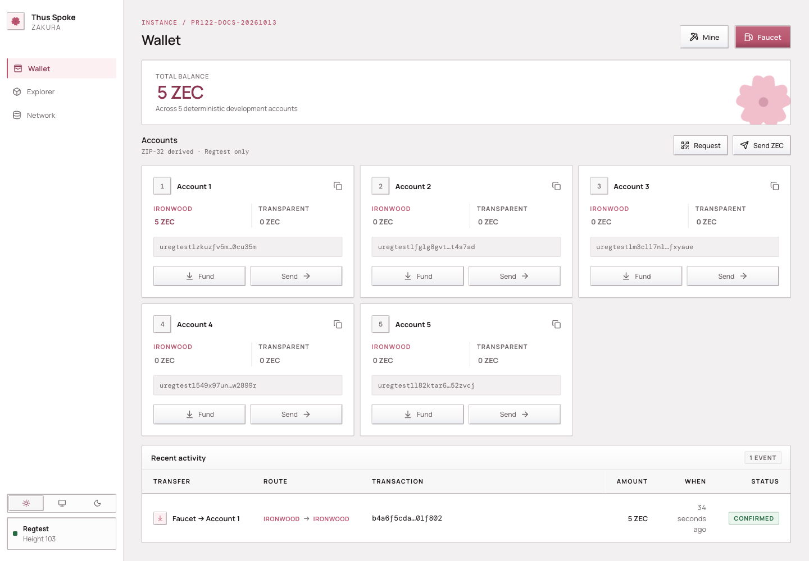
Select an account’s name to open its detail page. The full unified address and transparent address each have a copy button. The unified full viewing key is also shown and copyable when the server supplies it; an older server that omits the key simply has no viewing-key row. These pages cover development accounts 1–5 only.
Explorer also recognises those accounts. Searching the exact unified address of a local account opens the same account page. Known transparent addresses in transaction and address views have an Account N link beside their public chain information. Unknown transparent addresses keep their normal Explorer view; an unknown unified address still has no public chain-history page. Viewing keys appear only on the account detail page, not in Explorer rows or search results.
Two buttons open the faucet, and they are labelled differently. Faucet in the page header is the general one, and it only appears on Wallet — the Explorer and Network pages show just Mine. On each account card, Fund opens the same dialog with that account preselected.
Recent activity ages update while the page is idle. This only refreshes the displayed time; payment status still comes from the server.
Fund Account 2’s transparent pool
- Select Fund on Account 2’s card, or Faucet in the header.
- In the Fund an account or address dialog, choose Destination Account 2, Destination pool Transparent, and Amount (ZEC) 1. Select Add funds.
- Look at Recent activity for the transaction ID (
txid), the unique identifier of the broadcast transaction, and its status. Once confirmed and the wallet snapshot catches up, Account 2’s transparent balance should rise by 1 ZEC; its Ironwood balance is still separate.
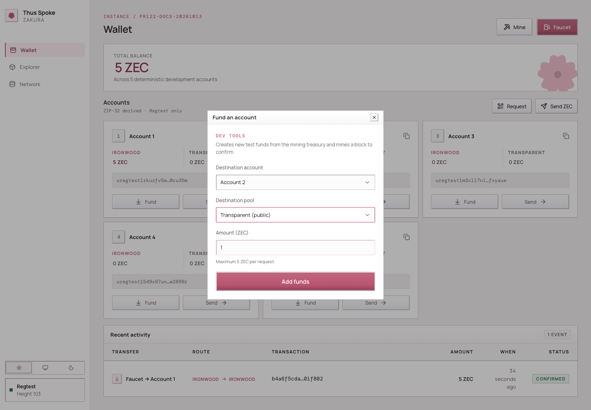
The same operation from the second terminal is:
ths wallet faucet --accounts 2 --amount 1 --pool transparent
Choose either the UI action or the CLI command if you want exactly one
faucet payment. Running both makes two payments. The faucet may mine extra
blocks first to mature and shield treasury rewards, then normally mines one
block to confirm the account payment. It accepts at most 5 ZEC per account
per request. If auto-mining fails, the recorded activity may remain
broadcast. Chapter 6
compares these callers.
Fund an external Regtest address
On Wallet, open Faucet and set Destination to External address. Enter a transparent Regtest address or a unified Regtest address with an Ironwood receiver, choose an amount of at most 5 ZEC, and select Add funds. The dashboard checks the address with the server before submitting the payment. If the response is lost, open Payments to resume the saved request with the same idempotency key. Do not start a second request for the same intended payment.
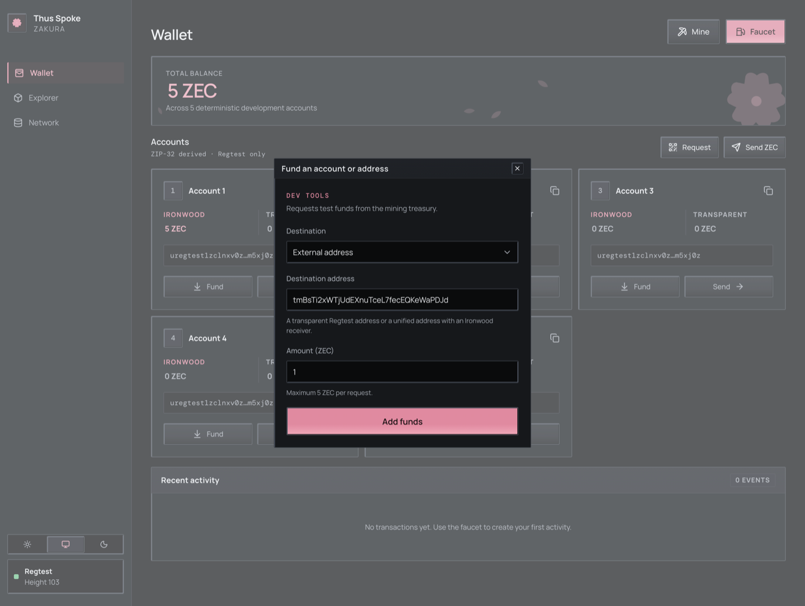
Send Ironwood funds from Account 1 to Account 2
This is a different pool movement from the transparent faucet payment.
- On Wallet, select Send ZEC.
- Set From account to Account 1 and Source pool to Ironwood. Set Destination to Account 2 and Destination pool to Ironwood.
- Enter 1 in Amount (ZEC). Optionally enter
hello from Regtestin Memo (optional), then select Send ZEC. - Check Recent activity for the transaction ID and actual status. After confirmation and wallet settlement, Account 2 has 1 Ironwood ZEC and its earlier 1 transparent ZEC. Account 1’s Ironwood balance falls by 1 ZEC plus the fee; do not expect it to be exactly 4 ZEC.
The dialog does the fee arithmetic for you. As soon as it has an account and
a pool it asks POST /api/v1/send/quote, and the hint under the amount field
shows the quoted spendable amount and network fee for that account and pool.
The Max button fills in that spendable figure. An amount above it is rejected.
An amount above 21,000,000 ZEC, the maximum supply, is rejected before the
request is sent.
Closing Send while the fee check is pending cancels that submission. A payment already submitted keeps running and remains available through Payments.
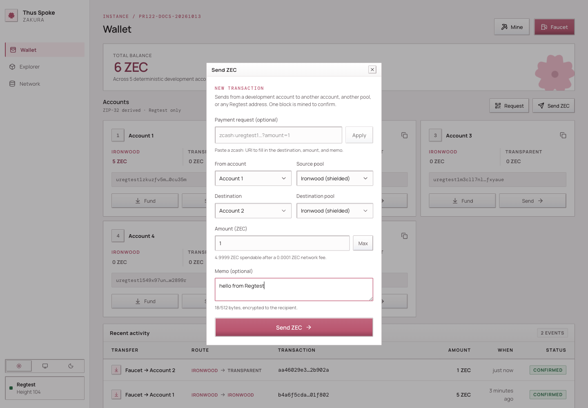
CLI equivalent:
ths wallet send --from 1 --to 2 --amount 1 --memo "hello from Regtest"
Inspect the returned txid, status, and any confirming block hash, then the accounts snapshot for the actual pool balances and source fee. Choose either the UI action or the command for one intended payment.
- Pair 1 — where the money comes from. The source account is one of
1–5, and the source pool decides what is spent:
transparentspends that account’s UTXOs,ironwoodspends its shielded notes. - Pair 2 — what the receiver gets. Choose a Destination account
from 1–5, or select Other address and fill in Destination address.
For an account,
ironwoodpays its unified address andtransparentpays its t-address. The account may match the source when the pools differ. For Other address, use a transparent Regtest address or a unified Regtest address with an Ironwood receiver. The dialog chooses Destination pool from the address and the server validates it before sending. - The fee is on top of the amount, taken from the source account. That
is why
max_zatoshifrom the quote, not the balance, is the ceiling. - A transparent source rarely spends exactly. Transparent inputs must be spent whole, so the change comes back as an Ironwood note in the source account rather than as transparent change.
- Only an Ironwood destination carries a memo. A transparent output has no memo field at all.
The memo is encrypted to the recipient and limited to 512 UTF-8 bytes, not 512 characters. The UI disables the field for Transparent destinations; the server rejects a present memo there too.
The server stores the supplied memo in its idempotency record to compare replayed requests. An absent memo and an explicit empty text memo are different payment identities. Activity has no memo field, and the dashboard’s transaction views do not decrypt received memos. ZIP-321 parsing can return a memo supplied in its input; that does not read a memo from the chain.
GET /api/v1/accounts provides a unified_full_viewing_key for each user
account. An external wallet imported with that key can decrypt memos sent to
that account. Public Explorer data reveals neither memo plaintext nor private
Ironwood recipient addresses.
Create a request for another sender
- On Wallet, select Request to open Request ZEC.
- Choose Receiving account, optionally enter Amount (ZEC, optional) and a memo, then select Generate request.
This calls POST /api/v1/zip321/request and displays a
copyable URI and QR code for that account’s unified address.
A blank amount lets the sender choose; this generates a request and moves no funds. Editing any field hides the generated URI and QR code while the values differ from those used to generate them. Restoring the same values shows the result again without regenerating. To create a request with different values, select Generate request again. Memos use the same 512-byte text limit. The memo encoded in the URI or QR code is readable to anyone holding the request; transaction memo encryption occurs only when an actual Ironwood payment is made. Generation does not read received transaction memos.
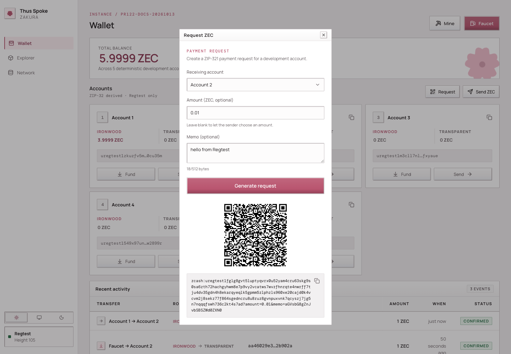
Payment request
Paste a single-payment zcash: URI into Payment request
(optional) and select Apply. The server resolves its address, pool,
optional amount, and text memo. Supply the amount when the request omits it.
Editing the URI disables Send until that revision is applied or the field is
cleared; a stale parse result cannot authorize the edited request. Editing the
transfer fields while Apply is pending also discards that result. Apply again
to replace the draft, or clear the request to continue with manual edits.
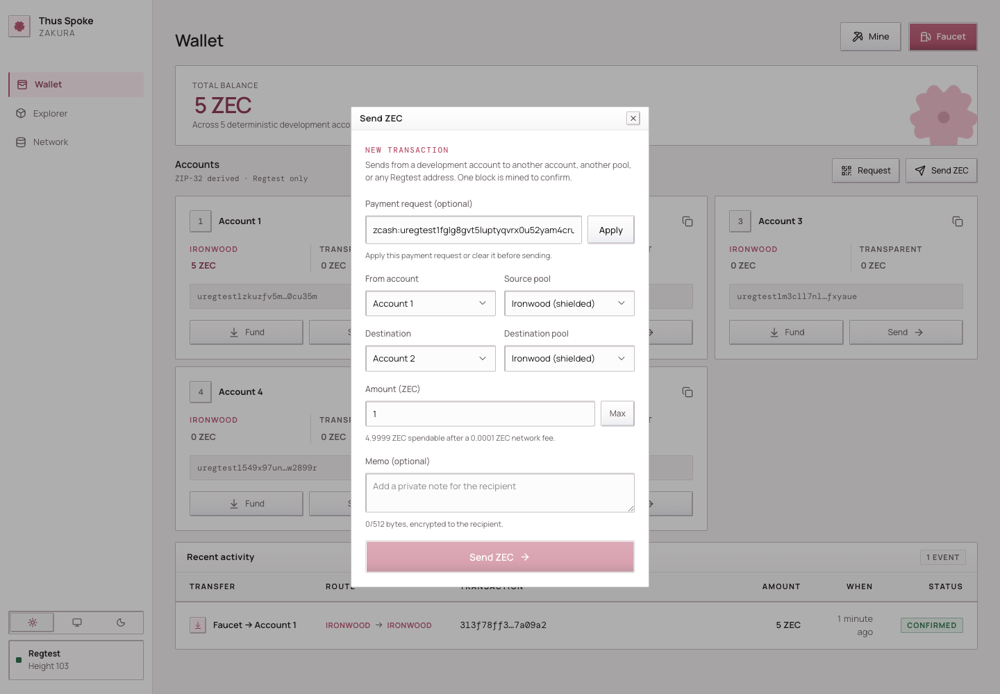
A pool conversion to try next
If you want to see a transparent source fund an Ironwood destination, use the transparent funds in Account 2:
ths wallet shield --from 2 --to 2 --amount 0.5
This sends 0.5 ZEC to Account 2’s Ironwood pool within the same account. The SDK selects
transparent inputs and pays a fee. Its change strategy can return any
remaining value to the source account’s Ironwood pool, so Account 2’s
transparent balance need not simply drop by 0.5 ZEC. Inspect both pools
afterward. The reverse operation is ths wallet unshield --from 2 --to 2 --amount 0.2. Both are allowed because the pools differ; a same-account
send with the same source and destination pool is rejected. See the CLI reference
for all pool options.
Look at the chain without confusing it with the wallet
Explorer lists blocks and can search a height, block hash, transaction ID, or transparent address. Open your transaction ID from Recent activity. Transparent inputs and outputs are public chain data; Ironwood details are not exposed as the user-account transfer shown by Recent activity. The server’s activity record knows the development account IDs, while the Explorer follows the public chain.
The Pending transactions panel lists transactions the node has received but has not yet included in a block. It appears only while at least one is waiting, and refreshes automatically, including when an external app broadcasts without advancing the chain. Open a transaction ID to inspect it before mining. Mine 1 block opens the existing mining controls with one block selected; confirm there to start the job. Once a transaction is mined, it leaves the pending list, and the panel disappears when nothing is left. A failed read shows an error instead of hiding the panel.
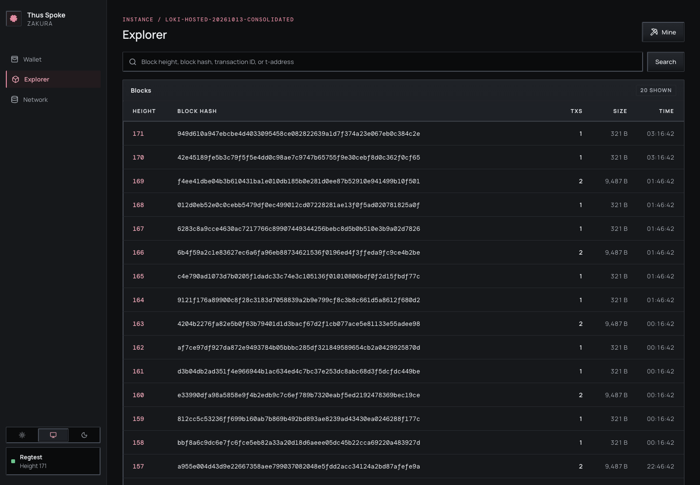
Network shows the node height, tip hash, account count, and published endpoints. If a transaction is recorded but the wallet balance has not caught up, follow the next chapter rather than computing a balance from Explorer.
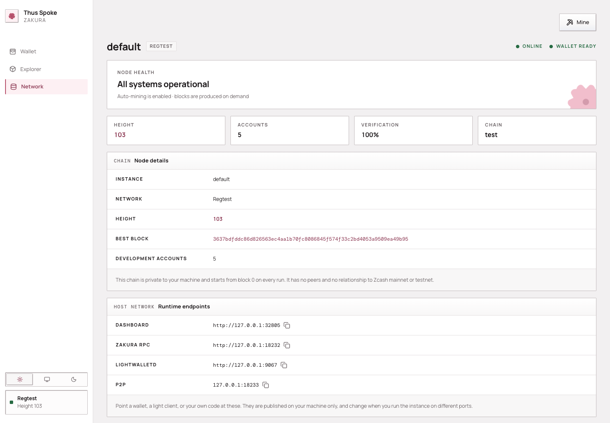
What you learned: a payment chooses two account/pool pairs, and confirmation, activity, and wallet balance are related but separate observations. Next: mine a block and trace wallet synchronization.
5. Mining and wallet sync
You have funded Account 2 and sent a payment. In the default auto mode both
operations mine a confirming block for you. This chapter mines explicitly and
follows a block from the node to the wallet and browser.
Mining asks Zakura to generate Regtest blocks on demand. A transaction is confirmed when the node reports it in a block on its current chain with a block hash. That does not instantly make every wallet view current: lightwalletd still has to index the block, and the wallet still has to scan and reconcile it.
ths mine Nand the dashboard Mine dialog callPOST /api/v1/mining/jobswith a block count and idempotency key; each receives HTTP 202 and a job before mining finishes. The server accepts 1–10,000 blocks.- Zakura generates blocks and returns their hashes. The server asks Zakura for the last returned block’s height.
- The wallet waits for lightwalletd to index that height, scans compact blocks, reconciles against Zakura’s canonical block hashes, and publishes a fresh user-account snapshot at a matching checkpoint.
- The server notifies dashboard clients of a
chainupdate. After successful synchronization, the CLI returnsblocksandhashes; the dashboard job becomescompleted. If a step after generation fails, the CLI returns an error and the job becomesfailed, even though blocks may already exist.
Mining modes
An instance is started in exactly one mining mode, chosen by a ths start
flag. The mode never changes for the server’s lifetime.
| Mode | Who produces the block |
|---|---|
auto (default) | The payment, faucet, or treasury operation itself. |
interval | A background task, one empty block every --block-time seconds. |
mempool | A background task, when the mempool holds a new, nonempty transaction set. |
manual | Nobody, until you run ths mine. |
Funding the development accounts during startup mines regardless of mode, so an instance is always ready to use. What changes is the chain’s progress after startup:
- In
intervalandmempool, the background task produces blocks directly, not through the manual mining coordinator. Those blocks therefore do not count toward aths minejob’s requested block count, and a manual job is never interleaved with them. mempoolremembers the last transaction set it tried to mine. It only mines a new block when that set changes, so a transaction the node cannot include does not make the server generate a stream of empty blocks.- In
manual, a payment is submitted and left pending. It confirms once a block that includes it arrives, normally fromths mine.
GET /api/v1/status reports the exact mode as mining_mode. It also keeps the
legacy boolean auto_mine (true only in auto mode), plus block_time in
interval mode and mine_on_mempool in mempool mode. The dashboard’s Network
page reads mining_mode and names the rule in words.
Mine and inspect one result
In the second terminal from Chapter 1, mine two blocks:
$ ths mine 2
2 of 2 blocks confirmed on default. Mining completed. Wallet synchronized. New tip: 9ef8f0064e3f088f2012fe04d5d70b42f00ae1e9676cdc3d5384ad31d384b8c4
The tip hash differs on every run. Regtest has no proof-of-work delay; completion also waits for indexing and wallet scanning. The dashboard’s Mine dialog starts a job and shows its progress. Do not run both if you intend to add only two blocks.
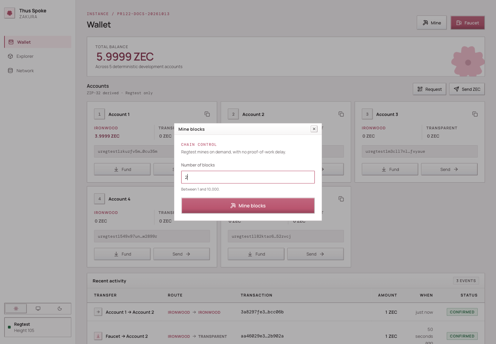
Follow mining progress in the dashboard
The Mine dialog shows block-generation progress, then syncing while the
wallet catches up. A job becomes completed only after synchronization
succeeds; generation or synchronization errors leave it failed. Only one
manual job can be active, including its synchronization phase.
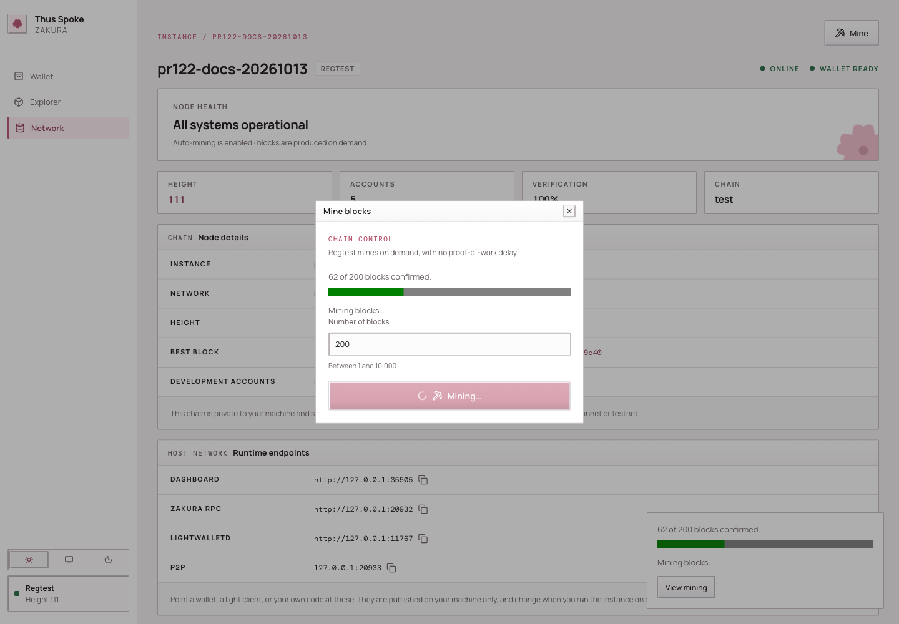
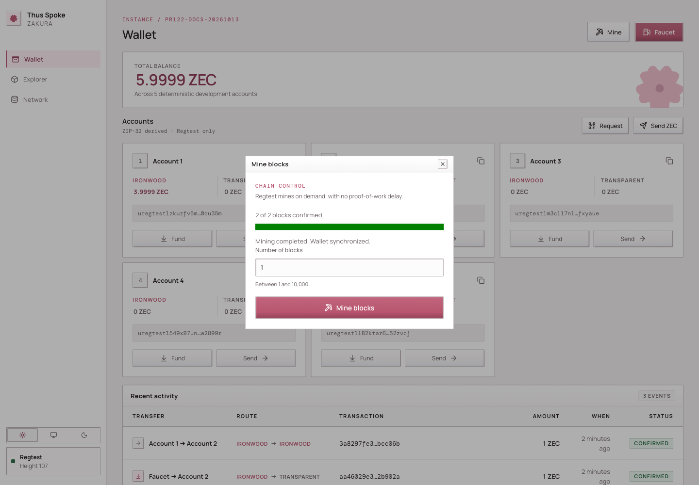
The dashboard reads GET /api/v1/mining/jobs for the latest job, or
GET /api/v1/mining/jobs/{id} for a specific job. Reusing an accepted key with
the same block count returns the same job within that server lifetime.
ths mine saves its key in the instance directory before submission and polls
for progress. A lost or undecodable response, interruption, or 300-second
polling timeout leaves the key in place. Rerun the command with the same block
count to resume that job. Once the job finishes, the CLI clears its key, so
repeating the command starts new mining. Each poll is capped at two seconds.
On completion, the CLI reports the confirmed count and mined tip hash; errors
include the job ID. --json includes the legacy blocks and hashes fields
alongside the job’s ID, state, and progress.
Before starting a job, the dashboard retains its idempotency key in browser session storage. If browser policy denies storage access or the key cannot be saved, the Mine dialog stays open and shows a storage error; no mining request is sent. Allow site storage before retrying. After an uncertain response, keep the existing session storage so a retry can reuse the same key.
If storage cleanup fails after the server accepts a job, the dashboard still shows the accepted job and follows its progress. The dialog reports cleanup failure separately; it does not mean the mining request was rejected.
Read the node and wallet view through the running instance’s API:
DASHBOARD_URL="$(ths endpoints --json | python3 -c 'import json,sys; print(json.load(sys.stdin)["dashboard"])')"
curl -fsS "$DASHBOARD_URL/api/v1/status"
curl -fsS "$DASHBOARD_URL/api/v1/accounts"
ths status reports the combined app, Zakura, and lightwalletd container state
and endpoints, not chain height or settlement. Use ths wait when a script
needs the node, index, and wallet settled at one tip. In
GET /api/v1/status, node.blocks is the node height and
node.bestblockhash is the tip hash.
The wallet fields mean:
| Field | Meaning |
|---|---|
wallet_sync.state | ready, syncing, or error for the server’s last synchronization attempt. |
observed_height and observed_hash | The node checkpoint the server most recently observed. |
fully_scanned_height and fully_scanned_hash | The wallet checkpoint it has scanned and validated; these can be null below the wallet birthday. |
error | Why the last attempt failed, if it did. |
last_success_at | Unix time of the last successful snapshot publication. |
After a successful ths mine on the normal running example, the wallet
has reconciled through the mined tip before the response. An independent
chain change can happen later, so use the current status fields when making
a decision. GET /api/v1/accounts serves the last wallet snapshot; it
does not calculate balances from node.blocks.
A same-height chain change still matters
A block height is a position; a block hash identifies the block at that
position. A reorganization replaces one branch of recent blocks with
another. A local chain can reorganize and replace a block with another at
the same height: height H may have hash A, then hash B. The server
compares hashes, finds a common checkpoint, rewinds its wallet scan when
necessary, and scans the canonical chain again. It publishes balances only
after reconciliation succeeds.
- About every two seconds, the background loop asks Zakura for the current checkpoint. A changed height or hash starts reconciliation.
- The wallet checks its scanned chain against Zakura and uses lightwalletd’s compact blocks to catch up. A mismatch can require a rewind and rescan. It also imports mined transaction history for public transparent addresses, including transactions created by another wallet using the development accounts. This records spent outputs as well as incoming funds. Each address has durable history progress; existing wallets backfill from their birthday on the first run with this support.
- On success, the server refreshes account balances, marks sync
ready, and notifies dashboard query hooks. On failure it reportserror; the last known balances can remain visible and may be stale.
Transparent history must catch up through the scanned checkpoint before that snapshot is published. Interrupted history requests retain their last complete progress and retry; a reorganization rewinds history progress with the wallet. This does not add external transactions to the request-based Recent activity feed.
This is why the Network page, Explorer, Recent activity, and Wallet page can show different stages of one event. They are observations of different owners, not four copies of one database. Revisit the state ownership diagram if that distinction is unclear.
The local chain uses NU7 rules from height 1, including a 25-second target,
shielded action limits, and fee recycling into the network sustainability
mechanism (NSM). Regtest blocks are still generated on demand with ths mine.
Next: learn what to do when a payment or mining response is uncertain.
6. Uncertain operations
The previous chapter showed that a block can be generated before the wallet publishes a new snapshot. A payment has a similar boundary: it can be broadcast before its caller receives a response. This chapter names each state and tells you what an HTTP response can and cannot prove.
The terms are deliberately narrow:
- Broadcast means lightwalletd accepted the transaction for submission. It does not mean the transaction is in a block.
- Activity is the server’s SQLite record of a development payment. It
includes a transaction ID (
txid),status, and optionalblock_hash. - Confirmed activity means Zakura reported the transaction in a block when the server last checked it, and SQLite stored that block hash. The status is a record of that check, not a live proof of canonical inclusion.
- An idempotency key is a caller-chosen string used to look up an already-recorded payment. It is not an end-to-end exactly-once guarantee.
Payment submission and confirmation
POST /api/v1/sendvalidates user account IDs (1–5), source and destination pools, amount, memo rules, and anidempotency_keyof 8–128 visible ASCII characters. Same-account sends are allowed when the pools differ. A recipient can also be a Regtest address matching the destination pool.POST /api/v1/faucetvalidates its user account, pool, amount greater than zero and at most 5 ZEC, and key. Validation happens before the recorded-key lookup.- If SQLite already has a claim for the key, the server resumes that
recorded payment. It compares the replay’s details, including the memo,
with the original intent; changed valid details return HTTP 409.
A new intent and key are recorded as
preparingbefore wallet work. - With a new key, the server synchronizes its wallet. The SDK chooses
spendable funds and a fee, constructs the transaction, and saves it in the
wallet. The server saves its txid and transaction bytes as
preparedbefore broadcast. For faucet payments, the source is hidden treasury Account 6; it may replenish itself first. - The server submits the saved transaction through lightwalletd and marks
it
broadcast. If the node already knows the txid, the server continues with that transaction. A lost response can be recovered using the saved payment rather than constructing another one. - The server asks Zakura whether the transaction is confirmed. If needed,
it mines one block, waits for wallet reconciliation, and asks again. It
returns
confirmedactivity with a block hash if successful. If auto-mining fails, it can returnbroadcastactivity with the txid and no block hash. Background confirmation checks can later confirm recorded account activity independently of wallet synchronization.
The important ordering is record intent → save transaction → broadcast. Send, account faucet, and address faucet reject transparent outputs below 54 zatoshi with HTTP 400 before recording a claim. Smaller positive shielded amounts remain valid. Concurrent requests with the same key share the recorded intent and serialized submission. Saved payments can be resumed across a server restart while the instance’s databases remain intact. This is not an end-to-end exactly-once guarantee: a fresh key requests a new payment, and deleting the instance deletes its recovery records.
HTTP admission and status
POST /api/v1/send, POST /api/v1/faucet, and
POST /api/v1/faucet/address save an intent before processing it. The response
is HTTP 202 while the payment is pending, or 200 when its stored status
is confirmed or failed. Both include the operation and a relative
Location with the encoded idempotency key.
Neither status code alone proves the payment succeeded: inspect the operation’s
status. Follow Location with GET to check a pending payment. The server
keeps working if the caller disconnects and resumes saved payments after a
restart. Status reads do not start payment work.
preparing, prepared, and broadcast are pending. Only confirmed and
failed are terminal. A pending operation can have an empty txid. A
last_error can describe a retryable failure and clears when processing
continues. Keep the same key after a timeout. Reusing it with different
payment details is rejected.
Earlier payments and dependent sends
The worker visits account payments in their stored admission order, including retained legacy transactions. Their random IDs and timestamp ties do not set that order. It keeps its position across bounded passes and alternates with external-address faucets so one slow collection does not always go first.
Admission order is not a promise that every earlier payment has finished. A
pass can stop while an earlier payment is still pending. If a Send then has
insufficient funds, it stays preparing while an earlier active payment
could fund its source account and pool, including Ironwood change from an
earlier spend. It keeps its original key and can progress after that payment
confirms. An unrelated payment, a payment accepted later, or a terminal
payment does not defer this failure. An earlier unconfirmed payment is
observation-only after a deliberate reorg or rollback, so it does not defer
an unfunded Send either, even before its transaction expires. Only
preparing, prepared, and broadcast payments are active funding
dependencies. The orphaned payment keeps its original status and key for
observation; this does not rebroadcast or fail it. Once no earlier funding
dependency remains, the existing transaction-reconciliation checks still decide whether
insufficient funds can safely become terminal failed.
Call the API with a deliberate key
This example uses integer zatoshi. Run it against the live dashboard URL of the same instance you used in earlier chapters:
DASHBOARD_URL="$(ths endpoints --json | python3 -c 'import json,sys; print(json.load(sys.stdin)["dashboard"])')"
curl -fsS "$DASHBOARD_URL/api/v1/send" \
-H 'content-type: application/json' \
--data '{"from_account":1,"to_account":2,"source_pool":"ironwood","destination_pool":"ironwood","amount_zatoshi":100000000,"idempotency_key":"book-account-1-to-2-v1"}'
The response is one payment-journal activity object. A keyed
GET /api/v1/activity?idempotency_key=<key> returns that same object in a
one-item list:
| Field | Meaning |
|---|---|
id | The activity row’s own UUID. Not the idempotency key and not the txid. |
kind | send or faucet. |
from_account | Source account 1–5, or null for a faucet payment out of the hidden treasury. |
to_account | Destination account 1–5, or null for an external send. |
to_address | External send destination, or null for an account recipient. |
source_pool | ironwood or transparent. |
destination_pool | ironwood or transparent. |
amount_zatoshi | Integer zatoshi paid to the destination. It does not include the fee. |
txid | The prepared transaction’s ID; empty while status is preparing. |
block_hash | The confirming block’s hash, or null before confirmation. |
status | preparing, prepared, broadcast, confirmed, unconfirmed after a deliberate reorg/rollback, or a stored terminal failed result. |
created_at | When the row was inserted, as YYYY-MM-DD HH:MM:SS UTC. |
last_error | Stored diagnostic, or null. |
An unkeyed GET /api/v1/activity returns unified wallet history. It merges
these journal records with transactions observed by the wallet and adds chain
metadata, memos, recipient and pool lists, and from_accounts and
to_accounts. The arrays preserve every affected development account;
from_account and to_account are only populated when their corresponding
array contains exactly one account. A transaction appears once even when it
affects multiple development accounts. Outputs to the hidden treasury account
are excluded from the user-facing amount, recipients, and account lists.
amount_zatoshi remains the value paid to the relevant user or external
recipient. Canonical wallet entries additionally expose the aggregate effects
across development accounts 1–5 as received_zatoshi, spent_zatoshi, and the
signed net_zatoshi. These totals include wallet change and transaction fees,
but exclude treasury account 6. Journal-only pending or failed entries set all
three effect fields to null because their final wallet effects are not yet
known.
When a transaction uses more than one pool, source_pool or
destination_pool is null and the corresponding source_pools or
destination_pools array preserves every known pool.
For external incoming transactions, transparent-source detection requires a Zakura transaction lookup. These lookups run concurrently within one short, shared budget and fail open: if Zakura is slow or unavailable, activity still returns and the unknown source pool remains absent.
For the keyed payment-journal object, read txid, status, and block_hash
first; do not infer confirmation merely because HTTP returned 200. That object
does not expose a memo field. The supplied memo is stored with the payment
intent to compare replays. Unkeyed unified history exposes decoded received
text memos in its memos array when transaction enhancement recovers them.
Keep this key only for this intended payment. If the server has recorded it,
repeating the same direct API request with the same key retrieves or
finishes that activity.
Resume a faucet payment after a lost response
-
Get the dashboard URL for your instance as shown above. Choose a key for this one-ZEC payment to Account 2 and keep the exact request:
curl -i "$DASHBOARD_URL/api/v1/faucet" \ -H 'content-type: application/json' \ --data '{"account_id":2,"pool":"ironwood","amount_zatoshi":100000000,"idempotency_key":"book-faucet-account-2-v1"}' -
If the response is lost, repeat that same request against the same instance. The key identifies this payment; a new key requests another one.
-
GET the returned
Locationuntil the stored status isconfirmedorfailed. For this example, that is:curl -fsS "$DASHBOARD_URL/api/v1/activity?idempotency_key=book-faucet-account-2-v1"The response is a one-item array. A mined block alone does not prove this payment was confirmed.
Which caller are you retrying?
| Caller | How to resume the payment |
|---|---|
| Direct API | Repeat the identical request with your saved key. A new key requests a new payment. |
| Dashboard Send or Faucet | Pending payments retain their key and exact details across dialog closure, refresh, and browser restart. Use Resume for the saved payment. A broadcast response does not clear it; terminal confirmed or failed results release the retained identity. |
| CLI send, shield, unshield, or faucet | Rerun the same arguments against the same instance. The local payment journal retains keys across errors and pending results; an identical command after successful terminal-result output starts a new payment. |
Send and faucet commands retain their retry keys if a stdout result write returns an error. Fix the output destination and rerun the same arguments against the same instance to recover that payment. For an account faucet batch, every key stays retained until all members are terminal and the batch output succeeds. A successfully reported terminal failure also releases its key; a later invocation may request another payment. This covers reported write errors, not a guarantee that a downstream program consumed buffered output.
The dashboard reads retained payment outcomes separately from wallet balances. A confirmation can appear before the wallet snapshot catches up. A partial CLI account-faucet batch retains its keys until every member has a terminal result; keep the same account selection when retrying it.
Decide what to do after a lost response
- Save any transaction ID or response you did receive. Query Recent
activity or
GET /api/v1/activity, then inspect Zakura’s transaction and chain state if you have a txid. With a saved key,GET /api/v1/activity?idempotency_key=<key>reads that payment’s stored activity, returning a one-item array or[]. - If the matching activity is recorded, use its status. A direct API caller
may repeat the same validated request with its same key to finish
confirmation. A
broadcastactivity may also becomeconfirmedafter another block and background confirmation checks. - If no matching activity appears, you cannot conclude that nothing was broadcast. Confirm that you are querying the same instance and retain the original key and details. The server can resume the saved payment even when no transaction ID was returned to you; do not replace the key merely because the response was lost.
ths faucet <ADDRESS>callsPOST /api/v1/faucet/addresswith a journaled idempotency key. A recognized user account appears in activity; an external destination has a separate stored faucet record. Read either throughGET /api/v1/faucet/address?idempotency_key=<key>before replaying the original request. The lookup is read-only; a stored external faucet does not appear in/api/v1/activity.
The server validates key syntax and compares recorded payment intents;
those checks are useful, but their boundary matters. Never reuse a key for
a different amount or recipient. Do not reconstruct a balance by summing
activity records; use GET /api/v1/accounts after wallet sync.
ths reorg and ths rollback clear affected confirmations in activity and
external faucet records, marking them unconfirmed while preserving the original
transaction, request, and key. Background handling only observes these payments;
it does not rebroadcast, replace, or auto-mine them. Replays return that same
unconfirmed request. A later canonical confirmation restores confirmed with
its new block hash.
An external chain reorganization can replace the block named by a previously confirmed
activity. The server reconciles wallet balances against the new canonical
chain, but it does not recheck activity already marked confirmed. If
current inclusion matters, query Zakura for the transaction and compare its
block hash with the current chain. Treat the stored activity status as the
result of its earlier confirmation check.
Mining has a different retry boundary
POST /api/v1/mine validates a count of 1–10,000 and starts a server-owned
job. It generates blocks, reads the mined tip, reconciles the wallet, notifies
dashboards, and returns blocks plus hashes. If a later step errors,
blocks may already exist, even though the request has no success response.
A lost connection does not cancel admitted work. Each legacy API request uses
a fresh internal key and can request additional mining.
The dashboard and ths mine use POST /api/v1/mining/jobs with a caller key
and receive an accepted job before completion. Replaying the same accepted
key and count returns that job within the server’s lifetime. After a lost response, read
GET /api/v1/mining/jobs to inspect the latest job before requesting more.
The CLI saves its key before submission and retains it after an uncertain
response, interruption, or polling timeout. Rerun ths mine with the same
block count against the same instance to resume the saved job. After the CLI
observes a finished job, it clears the key; the next invocation starts new
mining. Jobs are not recovered after a server restart.
After a timeout, compare the current node height and tip hash with
what you observed before the request. Use Network, GET /api/v1/status,
or Zakura RPC. Another process can also mine or reorganize a local chain,
so that observation guides a human decision but is not an exactly-once
receipt. Chapter 5 traces the full wallet catch-up.
Source map: API handlers, payment progression, SQLite activity and keys, wallet payments, and chain reconciliation.
Next: choose an interface for your own application.
7. Connect your application
By now you have seen one payment from the dashboard down to Zakura and back to the wallet snapshot. An integration needs to choose the owner of the data it wants, then connect to that owner’s local interface.
- Use the dashboard HTTP API when your program needs user accounts, reconciled balances, activity, or the server’s wallet sync status.
- Use Zakura JSON-RPC for the node tip, blocks, raw transactions, and mempool state. Those facts do not tell you which Ironwood notes your development wallet can spend.
- Use lightwalletd gRPC when building a compatible light client that scans compact blocks itself. The local service uses plaintext transport.
- Use
ths endpoints --jsonto discover host ports. All published addresses are on127.0.0.1; the instance’s Docker-internal names are a different network.
Discover the current instance
Keep ths running in one terminal. In another:
ths endpoints --json
For a named instance, use ths --name alice endpoints --json instead. The
default instance reports:
{
"dashboard": "http://127.0.0.1:32805",
"rpc": "http://127.0.0.1:18232",
"lightwalletd": "http://127.0.0.1:9067",
"p2p": "127.0.0.1:18233",
"network": "regtest",
"tls": false
}
The dashboard Network page shows the same fields for the selected instance.
Use the URLs reported for your running instance.
GET /api/v1/status calls the RPC field zakura_rpc. That naming difference
is a property of the two current responses, not two different nodes.
| Endpoint field | Example use |
|---|---|
dashboard | Base URL for /api/v1/status, /api/v1/accounts, /api/v1/activity, and the UI. |
rpc | Zakura JSON-RPC, such as getblockchaininfo. |
lightwalletd | Compact-block gRPC client connection. |
p2p | Local Zakura peer connection address. |
network | The chain, always "regtest". Assert on it before writing anything. |
tls | Always false. Configure transports as plaintext. |
The four ports are fixed defaults — dashboard 32805, Zakura RPC 18232,
P2P 18233, lightwalletd 9067 — shifted as a block by whatever
--port-offset that instance was started with. So they are stable across
runs of one instance, but they are not a constant of the system: read
ths endpoints --json rather than hard-code them, because you cannot know
another developer’s offset.
Build a small read client
Save the following as read_tsz.py and run python3 read_tsz.py while the
default instance is alive. It uses only Python’s standard library:
import json
import subprocess
import urllib.request
endpoints = json.loads(
subprocess.check_output(["ths", "endpoints", "--json"], text=True)
)
dashboard = endpoints["dashboard"]
def get_json(path):
with urllib.request.urlopen(dashboard + path, timeout=10) as response:
return json.load(response)
status = get_json("/api/v1/status")
if status["wallet_sync"]["state"] != "ready":
raise SystemExit("Wallet is not ready; inspect /api/v1/status before using balances")
if status["node"] is None:
raise SystemExit("Zakura did not answer the status query")
print("Node height:", status["node"]["blocks"])
print("Node tip:", status["node"]["bestblockhash"])
for account in get_json("/api/v1/accounts"):
print(
f'Account {account["id"]}: '
f'{account["ironwood_zatoshi"]} Ironwood zatoshi, '
f'{account["transparent_zatoshi"]} transparent zatoshi'
)
For a named instance, insert "--name", "alice" before "endpoints"
in the subprocess argument list. If Zakura does not answer the status query,
check the Network page and logs. In a healthy ready instance, the example
prints only user Accounts 1–5. 100000000 zatoshi is 1 ZEC.
GET /api/v1/accounts carries more than balances. Each account object also
has name, unified_address, transparent_address, and
unified_full_viewing_key. The addresses are what you pay from outside the
dashboard; the viewing key is the only way to read an Ironwood memo this
environment sent, since nothing in the API or UI shows one back. Because the
seed is fixed (see Chapter 3),
these values are identical in every instance — convenient for fixtures, and
a reason never to reuse them anywhere real.
For scripts that need the node, compact-block index, and wallet to agree,
GET /api/v1/status also reports settled and settlement_blocker. Use
ths wait before continuing, or ths run -- <command> to run a child command
in a fresh settled instance and clean it up afterward. The child receives the
API URL in THS_API_URL; see the CLI reference.
The explicit ready check matters. GET /api/v1/accounts returns the
last wallet snapshot even while a new scan is in progress or has failed.
Use wallet_sync.observed_height, observed_hash,
fully_scanned_height, and fully_scanned_hash if your application
needs to explain why the node and wallet differ. A same-height
reorganization can change a hash without changing a height.
Listen for changes, then fetch state
GET /api/v1/events is a server-sent event stream. Each update event
contains one topic: wallet, chain, sync, mining, or resync. The event is a hint
to refetch, not a balance or block payload. The dashboard’s query hooks
invalidate the relevant queries when one arrives. A simple terminal view
is:
DASHBOARD_URL="$(ths endpoints --json | python3 -c 'import json,sys; print(json.load(sys.stdin)["dashboard"])')"
curl -N "$DASHBOARD_URL/api/v1/events"
Leave it running, perform a faucet or mine in another terminal, and watch
for update events. Press Ctrl+C to stop the stream. Your client should
read the relevant HTTP endpoint after an event; it should also fetch
fresh state on each connection, cancelling pending older reads first.
The stream has no replay. A mining event prompts a job-status refresh. A resync event means
updates were missed; refetch the state your client uses.
Read chain state directly
This read-only JSON-RPC call asks Zakura for its chain view:
import json
import subprocess
import urllib.request
rpc = json.loads(
subprocess.check_output(["ths", "endpoints", "--json"], text=True)
)["rpc"]
body = json.dumps(
{"jsonrpc": "2.0", "id": 1, "method": "getblockchaininfo", "params": []}
).encode()
request = urllib.request.Request(
rpc, data=body, headers={"Content-Type": "application/json"}
)
with urllib.request.urlopen(request, timeout=10) as response:
print(json.load(response)["result"])
Save this as chain_info.py and run python3 chain_info.py. The result
describes the node. Use the accounts API for the development wallet’s
balances and the activity API for recorded requests. Do not try to infer
private Ironwood recipients or memo plaintext from raw chain data.
Connect a light client
Pass the lightwalletd endpoint to a lightwalletd-compatible gRPC client
configured for plaintext. You do not have to take that on trust: the
same ths endpoints --json that gave you the address reports "tls": false
alongside it. Some clients expect host:port rather than an http:// URL;
use the form your client library requires.
The rest of the API surface
These are every route the server serves today, from
crates/ths-server/src/api.rs:
| Route | Notes |
|---|---|
GET /api/v1/health | 200 after startup finishes, Zakura and lightwalletd answer, and the wallet has published at least one snapshot; 503 otherwise. The natural readiness probe. |
GET /api/v1/status | Node tip, account count, network, endpoints, wallet_sync, and settlement status. |
GET /api/v1/accounts | Accounts 1–5 with balances, addresses, and viewing keys. |
GET /api/v1/activity | Unified development-wallet history. Each transaction appears once; account arrays retain every affected user account and treasury outputs are hidden. See Chapter 6. |
GET /api/v1/activity?idempotency_key=<key> | Read one payment’s stored activity as a one-item array, or []; the read does not resume it. |
POST /api/v1/send/quote | Dry run: available_zatoshi, fee_zatoshi, max_zatoshi for one account and pool pair. Builds and broadcasts nothing. Check an intended amount against max_zatoshi before calling send. Returns 503 while the environment is still starting, like send and faucet. |
POST /api/v1/send | Payment to a user account or supported Regtest address. Needs an idempotency key. |
POST /api/v1/faucet | Treasury payment to an account. Needs an idempotency key. |
POST /api/v1/faucet/address | Treasury payment to a supported Regtest address. Needs an idempotency key; external recipients have a separate stored faucet record. |
GET /api/v1/faucet/address?idempotency_key=<key> | Read an internal or external address-faucet result, or 404 if none is stored. |
POST /api/v1/mine | Generate 1–10,000 blocks and wait for wallet synchronization. Each call uses a fresh internal key. |
POST /api/v1/reorg | {depth, keep_txs?} removes recent blocks and mines replacements. Returns old/new tips, block hashes, and best-effort transaction-retention results. |
POST /api/v1/rollback | {depth} removes recent blocks without replacements and reconciles the wallet. Neither chain-changing POST is automatically retried. |
POST /api/v1/mining/jobs | Start a keyed mining job with {blocks,idempotency_key}; returns HTTP 202 and the job. |
GET /api/v1/mining/jobs, /mining/jobs/{id} | Read the latest job or a specific job; see Chapter 5. |
POST /api/v1/zip321/parse | Parse one Regtest payment URI into its address, pool, optional amount, and memo; moves no funds. |
POST /api/v1/zip321/request | Generate a payment URI from {account_id} and an optional amount and memo; moves no funds. |
POST /api/v1/dev/seed | Returns the raw seed hex. Refuses unless the body carries "confirmation": "I understand this seed is for regtest only". |
GET /api/v1/blocks, /blocks/{id}, /transactions/{txid}, /mempool, /addresses/{address}, /search | Read-only explorer views of public chain data. |
GET /api/v1/events | The server-sent stream described above. |
Accepted payment intents now progress in the background, including payments to external faucet addresses. A successful response can still describe a pending payment; read its stored status before choosing whether to replay it.
Chapter 6 explains the retry boundaries around payment and mining requests. These interfaces are for local Regtest experiments; keep them on loopback and verify the current source before building a long-lived integration.
What you learned: choose an endpoint by state ownership, then check wallet readiness before using a balance. Next: use the CLI reference, source development guide, or troubleshooting guide as your experiment needs.
Appendix A: ths CLI reference
ths is the Thus Spoke Zakura launcher. It manages the Docker-based Regtest
environment and, once an environment is running, talks to its dashboard API or
Zakura JSON-RPC on your behalf. This page documents every command in detail,
with examples.
Read Chapter 1 for an instance’s lifecycle, Chapter 3 for accounts and pools, and Chapter 6 before retrying a payment or mine request. The examples below demonstrate individual commands; they are not one script to run in order. If a send or faucet command cannot write its result, fix the output destination and repeat the same arguments against the same instance. Its saved payment identity remains available for that retry. For a worked dashboard flow, see Chapter 4.
Conventions used below
- All commands accept two global options, which can be placed before or
after the subcommand:
--name <NAME>— target a named, isolated environment instead of the default one (default:default, or a freshrun-<UUID>forrun). Names use 1–40 lowercase ASCII letters, digits, or internal hyphens.--json— print machine-readable JSON instead of human-readable text, where the command supports it.
- Use
-h/--helporths help <command>for help;-V/--versionprints the launcher version.--jsondoes not convert logs, browser opening, builds, cleanup messages, orrpcresults into JSON and is rejected forrun. Userpc --rawfor the full JSON-RPC response. - Accounts are referred to by index,
1through5. Every environment starts with five disposable development accounts; there is no need to copy full Regtest addresses to use the commands on this page. (A hidden sixth account acts as the mining/faucet treasury and is not addressable from the CLI.) - Amounts are ZEC decimal strings with up to 8 decimal places, e.g.
1,0.5,2.25000001. These are disposable Regtest coins with no value. - Commands that call the app (
tx,block,mine,reorg,rollback,faucet, andwalletsubcommands) or the node (rpc) require a running environment. Start one first withths(orths --name <NAME>).stopandreset --forcecan remove resources left by an interrupted run.
Environment lifecycle
ths / ths start
Starts a fresh environment in the foreground and opens the dashboard in your
browser. Ctrl+C starts bounded, instance-scoped deletion of its chain, wallet,
keys, containers, and volumes. Incomplete or uncertain cleanup exits with an
error and retains lifecycle-recovery.json; see Chapter 1.
ths
ths start --no-open # don't open a browser tab
ths --name alice start --port-offset 10 # start a second, independent environment
The default loopback ports are dashboard 32805, Zakura RPC 18232, P2P
18233, and lightwalletd 9067. --port-offset is the amount added to
each host port (default: 0), and must be a multiple of 10. It is not multiplied
by 10; the result must fit a valid nonzero host port. Startup fails and names an occupied port
instead of selecting a random port.
start also selects the instance’s mining mode. Exactly one mode is active
for the whole server lifetime, so the flags below are mutually exclusive:
| Mode | Flag | Behavior |
|---|---|---|
auto (default) | none | Each payment, faucet, and treasury operation mines its own confirming block. |
interval | --block-time <SECONDS> | A background task mines an empty block every <SECONDS> seconds. The value must be a positive integer. |
mempool | --mine-on-mempool | A background task mines a block when the mempool holds a new, nonempty transaction set. |
manual | --no-auto-mine | Nothing is mined automatically; unresolved work waits for ths mine. |
Funding the accounts during startup completes in every mode. Afterward, the
mode decides who mines: in auto, a payment mines its own block; in interval
and mempool, a background task produces blocks outside any manual job, so
those blocks never count toward a ths mine request; in manual, a payment
stays pending until you run ths mine. The selected mode is reported verbatim
as mining_mode in GET /api/v1/status (with block_time for interval), and
the dashboard’s Network page names it. ths run always uses auto.
ths start --block-time 2 # mine an empty block every 2 seconds
ths start --mine-on-mempool # mine whenever a transaction arrives
ths start --no-auto-mine # mine only when you run `ths mine`
ths wait [--timeout <SECONDS>]
Waits for an instance’s node, lightwalletd index, and wallet to be settled at
the same canonical tip, and for the ths start or ths run that owns it to
report ready. It also waits for an instance that is still being created in
another shell, and fails after a few seconds if no command is creating it or
if its launcher has exited and left only its containers behind. It creates
no instance and makes no chain changes. The timeout defaults to 120 seconds, and status reads are bounded
by the remaining budget. Timeout or interruption exits nonzero and leaves the
instance running. On timeout, the error reports the last observed heights and
settlement blocker. --json emits the settlement object on success:
node_height, lightwalletd_height, wallet_scanned_height,
wallet_sync_state, settled, and nullable settlement_blocker.
ths --name alice wait --timeout 180 --json
ths run [--timeout <SECONDS>] -- <COMMAND> [ARGUMENTS...]
Starts a fresh instance, waits for readiness and full settlement, runs a child
command in your current directory, then attempts bounded instance cleanup.
The 120-second default timeout covers startup and settlement; it does not
limit child execution. No browser opens. Without --name, the name is
run-<32 UUID hex digits>; an explicit name must be fresh. Existing metadata
or resources cause a collision error rather than reuse. Docker assigns free
loopback ports to each run. Cleanup removes the run’s per-instance lock file;
failures are reported.
ths run --timeout 180 -- sh -c 'curl -fsS "$THS_API_URL/api/v1/accounts"'
The child inherits standard streams and the calling directory, but run
supports non-interactive commands: it creates a separate process group without
transferring control of the terminal. Commands that read from the controlling
terminal are unsupported. No persistent environment is provided. Seeds and
spending keys are not exported. --json is rejected
because the child owns stdout; launcher progress, Docker output, and the
init container’s secrets banner go to stderr. The child receives:
| Variable | Value |
|---|---|
THS_INSTANCE | Selected/generated name |
THS_NETWORK | regtest |
THS_API_URL | Dashboard/API base URL |
THS_ZAKURA_RPC_URL | Zakura JSON-RPC URL |
THS_LIGHTWALLETD_URL | Plaintext compact-block endpoint |
THS_LIGHTWALLETD_TLS | false |
THS_P2P_ADDR | Loopback peer host:port |
A normal child exit preserves its exit code. A signaled child exits 1. On Unix,
launcher interruption forwards the signal to the child process group, with
bounded grace before forced termination. Cleanup failure after a successful
child makes run fail; after a nonzero child exit its code is preserved and
cleanup errors are reported separately. Recovery metadata remains when deletion
cannot be verified. Settlement is an observation before the child starts,
not a lock against later chain changes. ths --name <name> stop or
reset --force from another shell stops the child as Ctrl+C would, cleans
up, and exits with status 1.
ths build [--dev]
Builds the runtime Docker images from the current source checkout (for development from a clone, not needed for the installed release).
ths build # release-optimized images
ths build --dev # keep workspace Rust code unoptimized for faster rebuilds
ths pull
Pulls the exact runtime images that match this launcher’s version, instead of building them locally.
ths pull
ths status [--json]
Shows the named environment’s service state and endpoints. Like ths list, it
checks the app, Zakura, and lightwalletd containers and reports running,
paused, degraded, stopped, conflict, or unknown; the one-shot init
container does not decide the overall state. It exits nonzero unless the state
is running. It is not /health or a wallet-settlement check; use ths wait
when a script needs the node, index, and wallet settled at one tip. JSON keeps
the existing name, running, and endpoints fields and adds state and
containers.
ths status
ths status --name alice --json
ths open
Opens the running dashboard in your default browser.
ths open
ths endpoints [--json | --env]
Prints the dashboard, Zakura RPC, lightwalletd, and P2P endpoints, useful for
scripts and other developer tooling. --env prints export lines for the
same variables ths run passes to its child, so
eval "$(ths endpoints --env)" can set them for an environment that is
already running. --env cannot be combined with --json.
ths endpoints
ths endpoints --json
ths endpoints --env
JSON output includes "network": "regtest" and "tls": false; lightwalletd
uses plaintext HTTP on loopback.
ths rpc [--raw] [--yes] <METHOD> [PARAMS...]
Calls one method on the named instance’s Zakura JSON-RPC endpoint and prints the result. The endpoint is the loopback URL stored for that instance. The call is sent only when the Zakura container recorded for the instance is still that container, is owned by the instance, and still publishes that URL. A container that only reuses the name is refused.
ths rpc getblockcount
ths rpc getblockhash 0
ths rpc --raw getblockchaininfo
ths --name alice rpc getblockcount
getblockcount prints the current height. A string result, such as a block
hash, is printed without quotes. Objects and arrays are pretty-printed JSON.
--raw prints the full JSON-RPC response instead of only result. The global
--json flag does not change this output.
Parameters are parsed as JSON when they are numbers, true, false, null,
objects, or arrays. Any other argument is sent as a string.
An RPC error prints the node’s error message and exits nonzero. stop shuts
the node down, so it is refused unless --yes is set:
ths rpc --yes stop
ths logs [app|zakura|lightwalletd] [-f|--follow] [--tail N | --head N]
Prints or streams logs for a service in the named environment. Defaults to the
app (dashboard/server) service. Without --tail or --head, it prints
all available Docker logs. Counts must be positive. --head conflicts with
--tail and --follow; --tail can be combined with --follow. Output remains
log text even with the global --json flag. App lines are plain text, without
terminal color codes. If the reader closes the pipe, the command stops without an
error.
ths logs # available logs from the app service
ths logs zakura -f # follow node logs
ths logs lightwalletd --follow # follow lightwalletd logs
ths logs --tail 200 -f # last 200 app lines, then follow
ths logs zakura --head 200 # first 200 node lines
ths stop
Stops the named environment and deletes its containers, volumes, and network.
If a ths start or ths run for it is still running, even while starting,
stop asks that launcher to shut down as Ctrl+C would, waits for its cleanup,
and succeeds only once the deletion is verified.
ths stop
stop uses verified, instance-scoped cleanup. A foreground start observes
external deletion and exits; you do not need to interrupt it separately.
Cleanup errors retain lifecycle-recovery.json for this instance. A successful
message requires verified deletion; neither stop nor reset removes another
instance’s resources. If the name has no instance metadata, recovery state, or
owned Docker resources, both commands report that the environment does not
exist and exit nonzero.
ths reset --force
Same as stop, but named explicitly as a destructive action; requires
--force since it permanently deletes chain, wallet, and seed data.
ths reset --force
ths list [--json]
Lists known environments in sections by state, with each one’s dashboard URL,
state (running, paused, degraded or stopped), and containers’ status and
creation and start times. --json gives the same data with unix-second
timestamps. The JSON array contains name, metadata version, endpoints,
nullable created_at, state, and containers. Each container has service,
state, and nullable created_at / started_at; the one-shot init service
may already be exited. An environment whose container names are held by containers it
doesn’t own is listed as a conflict, and if Docker can’t be reached,
environments are still listed with their state as unknown.
ths list
ths doctor [--json]
Checks that Docker is reachable and prints the launcher’s configuration
directory. If Docker is unreachable, the command exits nonzero in both output
modes. With --json, stdout still contains one diagnostic JSON object with
ok: false and docker: null; the error is written to stderr.
ths doctor
ths update [VERSION] [--check] / ths uninstall
Checks for, installs, or rolls back a released launcher version, or removes
the installed ths executable.
ths update --check # only report whether a newer release exists
ths update # install the latest verified release
ths update v0.3.0 # install (or roll back to) an exact version
ths uninstall
ths --version prints the installed version. The recorded source baseline uses package version 0.3.0;
the installer downloads a published release, not a build of recorded main.
An explicit VERSION conflicts with --check.
uninstall removes only the installed executable. Images and launcher
configuration remain. Capture the real directory before uninstalling.
The image tags below match this book’s source baseline; inspect your selected
launcher’s tags before removing shared images used by other instances.
THS_CONFIG_DIR="$(ths doctor --json | python3 -c 'import json,sys; print(json.load(sys.stdin)["config_dir"])')"
ths list
ths stop # repeat with --name for each instance you intend to delete
ths uninstall
docker image rm ghcr.io/zcashlabs/thus-spoke-zakura-app:0.3.0 \
ghcr.io/zcashlabs/thus-spoke-zakura-lightwalletd:0.3.0 \
zakuracore/zakura:1.6.0
Inspect $THS_CONFIG_DIR separately before deleting configuration. Retained
recovery records should be resolved before removing that directory. Executable,
shared image, and configuration removal are separate decisions.
ths mine <BLOCKS>
Mines blocks on the running environment and synchronizes its wallet — useful for testing confirmations, expiry, or coinbase maturity.
ths mine 1
ths mine 10 --json
Counts must be 1–10,000. Mining POSTs return 503 until startup finishes.
The command submits to the mining-job API (POST /api/v1/mining/jobs with
{blocks, idempotency_key}; acceptance returns HTTP 202) and polls
GET /api/v1/mining/jobs/{id} until the job completes or fails, printing
progress as it goes in human-readable mode (including the mined tip hash on
completion and the job ID on failure) and the final job as JSON with
--json. Each poll is capped at 2 seconds, so a single stalled or dropped
connection cannot delay Ctrl+C or the overall 300-second deadline; a poll
that fails to get a response is retried within that deadline rather than
ending the command, since the job may still be running on the server. The
idempotency key for a given block count is saved to the instance directory
before the request is sent and only cleared once the job reaches a terminal
state, so a submission whose response is lost or fails to decode, or a
command interrupted or timed out mid-poll, does not lose track of the job:
the next ths mine with the same block count reuses the saved key and picks
the same job back up instead of starting a second one. Once a job completes
or fails, its key is forgotten, so repeating that command afterward starts a
fresh job. A different manual request during mining or wallet synchronization
is rejected with HTTP 409.
--json output keeps the legacy endpoint’s blocks (the confirmed count)
and hashes fields, alongside the job’s id, requested_blocks, state,
error, and progress_uncertain. A failed job after partial progress still
reports what it mined rather than only the error.
Dashboard jobs use POST /api/v1/mining/jobs with {blocks, idempotency_key};
acceptance returns HTTP 202. Replaying an accepted key with the same count returns
the same job, including after completion or failure. Reusing that key with a
different count returns HTTP 409. The latest-job GET returns {job} or
{job:null}; GET /api/v1/mining/jobs/{id} returns the job directly or 404.
The dashboard restores latest-job progress after refresh, navigation, modal
dismissal, or closing and reopening a tab. Its accepted response clears the
session admission key; a cached completed or failed job also clears a prior
key before another attempt. See Chapter 5
for the UI retry boundary.
Progress counts only acknowledged hashes from that job, excluding interleaved
payment or faucet mining. A failed mining RPC may have committed extra blocks;
its acknowledged count is a lower bound and the server never automatically retries
the uncertain RPC. A wallet synchronization failure after mining retains the
full mined count but leaves the job failed, with the synchronization error;
it does not mark the job completed.
Job history and keys last only for the server process lifetime, with a limit of 1,024 jobs and no key eviction. At capacity, new admissions return HTTP 503; existing-key replays and reads continue. Stopping the server cancels running work and discards this history. Jobs and deduplication do not survive a restart.
ths reorg --depth <N> [--keep-txs] / ths rollback --depth <N>
reorg removes the last N blocks and mines N replacements, keeping the tip
height but changing those block hashes. rollback removes them without
replacements. Both reconcile the wallet and support --name and --json.
Depth must be 1–1,000, within Zakura’s non-finalized window, and leave at least
block 1 for wallet reconciliation. Active mining, payment execution, or another
chain operation causes HTTP 409.
ths reorg --depth 3
ths reorg --depth 3 --keep-txs --json
ths rollback --depth 3
ths wait
Without --keep-txs, ths does not rebroadcast dropped transactions; replacement
mining still uses the node’s mempool. Zakura can independently requeue a prior
RPC submission, so neither rollback nor reorg guarantees an empty mempool or
prevents later inclusion of a dropped transaction. With --keep-txs, ths
attempts to reinclude the original non-coinbase transactions and verifies their
replacement-block inclusion.
Invalid anchors or other admission failures may prevent reinclusion. Failures
are reported in both output modes; --json also lists retained_txids and
failed_transactions. The CLI exits nonzero if any transaction was not retained,
even though the chain changed.
Affected payment records become unconfirmed, keeping their txids and keys.
The server observes them but does not automatically rebroadcast, replace, or
mine them. Later canonical inclusion can restore confirmed. This is not a
wallet snapshot restore: unexpired local transactions can still reserve inputs.
The server owns admitted work after client disconnection. An error or lost
response can follow a partial chain change; inspect the current tip before
retrying. Neither invalidation nor replacement mining is automatically retried.
Transient lightwalletd read failures during reorg repair are retried within the
wallet synchronization deadline, without repeating the chain mutation.
Explorer: ths tx <TXID> / ths block [ID]
Read the same transaction or block data as the dashboard explorer. Block IDs
can be heights or hashes; omitting the ID shows the chain tip.
Human output lists every returned field; --json prints the complete API object.
Unknown transactions or blocks exit nonzero with the server’s 404 message.
ths tx "$TXID" --json # Set TXID to a transaction ID first.
ths block
ths block 100 --json
Funding an address: ths faucet <ADDRESS> [--amount <ZEC>]
Sends disposable Regtest ZEC from the treasury directly to any Regtest unified
or transparent address, not necessarily one of the five development accounts.
Limited to 5 ZEC per request; defaults to 1 ZEC. It takes no memo. For the
development accounts, use
ths wallet.
RECIPIENT="$(ths wallet balances --json | python3 -c 'import json,sys; print(json.load(sys.stdin)[0]["unified_address"])')"
ths faucet "$RECIPIENT" --amount 2.5
The address API requires an idempotency key, which the CLI saves in its
instance-local faucet journal. Pending results or errors retain the key; rerun
the same command with the same address, amount, and instance name to resume.
Confirmation with a block hash or a stored terminal failure clears it, so the
next identical command can fund again. Each invocation submits once then polls
read-only keyed status within a 30-second payment budget. Pending/unknown results
exit nonzero; JSON includes the retained idempotency_key. A recognized
user-account address produces account activity; an external
address has a separate persisted faucet record and is absent from the activity
list. Preserve the returned txid and status for observation.
ths wallet: the development wallet
Everything under ths wallet acts on the wallet held by the running ths
server: the five development accounts (index 1-5) and the hidden treasury
that funds them. Its subcommands do the same things as the dashboard’s Faucet
and Send dialogs, from a script or terminal:
| Subcommand | What it does |
|---|---|
ths wallet balances | Print each account’s balances and addresses |
ths wallet activity | Print canonical incoming and outgoing wallet history, plus pending or failed payments |
ths wallet quote | Show the spendable funds, fee, and maximum send for one account and pool route, without sending |
ths wallet faucet | Fund one or more accounts from the treasury |
ths wallet send | Send funds between accounts or pools or to a Regtest address, with an optional memo, or pay a zcash: URI |
ths wallet shield | Spend transparent funds into the same or another account’s Ironwood balance |
ths wallet unshield | Spend Ironwood funds into the same or another account’s transparent balance |
The mutating subcommands attempt to mine a confirming block and
print the resulting transaction ID. If auto-mining fails, activity may remain
in broadcast state; send, shield, and unshield print a confirming block
hash when one is available. In interval, mempool, and manual modes the
command submits the payment, then waits up to 30 seconds for a confirming
block. In interval and mempool modes the background task usually produces
that block within the wait; in manual mode no block is produced automatically,
so the wait expires and the command exits with status 1 and a pending-payment
message that includes the idempotency key. Running the same command again with
the same arguments resumes the retained payment identity and waits for another
30 seconds; ths mine in a separate terminal produces the confirming block.
Pass --json for machine-readable output.
ths wallet balances
Prints accounts 1–5 with their transparent and Ironwood balances in ZEC and the
addresses that receive them. With --json, balances are integer zatoshi and
the array contains id, both addresses, transparent_zatoshi, and
ironwood_zatoshi. The command first requires wallet_sync.state: ready;
syncing or failed scans exit nonzero instead of printing stale balances.
This is not a full settlement test: use ths wait if node/index/wallet
alignment is required.
ths wallet balances
ths wallet balances --json
ths wallet activity [--limit <N>]
Prints recent canonical activity for the five development accounts, newest
first, together with pending or failed payment-journal entries. The output
includes external incoming payments. Each transaction appears once; internal
transfers retain both their source and destination accounts. It distinguishes
receives, sends, shields, unshields, and faucet payments, and shows their
status, route, amount,
transaction ID and confirmation block (when available), creation time, and any
retained payment error. External Regtest recipients are shown by their full
address. Faucet routes are labeled faucet; the hidden treasury account is
never exposed as a user account.
Without --limit, the server’s default of 30 entries is used. An explicit
limit must be between 1 and 100. An environment with no activity prints a
short empty-state message.
ths wallet activity
ths wallet activity --limit 20
ths wallet activity --json
ths wallet activity --limit 20 --json
JSON output is the unmodified activity schema returned by
GET /api/v1/activity, including transaction direction, pools, decoded text
memos, mining metadata, created_at, and nullable block_hash. The
from_accounts and to_accounts arrays retain every development account
affected by a transaction. Their singular counterparts are populated only
when exactly one account is affected. Outputs to the hidden treasury are not
included in the displayed amount, recipients, or account lists. Detecting a
transparent source for an external incoming transaction is best effort and
uses one short, shared lookup budget, so an unavailable Zakura node does not
hold up the activity response.
ths wallet quote --from <N> --source-pool <POOL> --destination-pool <POOL>
Shows how much one account could send along one pool route, and the network
fee for that route, without sending anything. It asks the same dry-run quote
the dashboard’s Send ZEC dialog uses for its Max button
(POST /api/v1/send/quote); see
quoting a send.
--from <N>(required): account index, 1–5. The treasury account cannot be quoted.--source-pool <ironwood|transparent>(required): pool the send would spend from.--destination-pool <ironwood|transparent>(required): pool the send would pay into. Both pools are required because the fee depends on the route.
ths wallet quote --from 1 --source-pool ironwood --destination-pool ironwood
ths --name demo --json wallet quote --from 1 --source-pool ironwood --destination-pool transparent
The text output shows ZEC; --json keeps the server’s integer zatoshi fields
and adds the route they answer:
{
"from_account": 1,
"source_pool": "ironwood",
"destination_pool": "transparent",
"available_zatoshi": 500000000,
"fee_zatoshi": 15000,
"max_zatoshi": 499985000
}
available_zatoshi: funds the quote’s proposal could spend from the source pool. This can be lower than the pool’s balance inths wallet balances, for example while change is not yet spendable.fee_zatoshi: the fee for spending them along this route.max_zatoshi: the largest amountths wallet sendcould send along this route.--maxonsend,shield, andunshieldasks for its own quote when it runs, so it can submit a different amount if the wallet has changed.
The quote is a snapshot for the selected route, not a reservation: a later
payment, faucet, or mined block can change it, and it does not simulate one
particular amount. The fee depends on the destination pool rather than which
account receives, so the quote applies to a send to any development account
in that pool. Like balances, the command first requires
wallet_sync.state: ready.
The command never submits a payment and never saves an idempotency key. An
empty pool is a valid answer: max_zatoshi is 0 and the command exits 0.
Invalid arguments, a syncing or failed wallet, and server errors exit nonzero.
ths wallet faucet --accounts <LIST> [--amount <ZEC>] [--pool <POOL>]
Funds one or more accounts from the treasury faucet in a single command.
--accounts <LIST>(required): comma-separated account indices, e.g.1,2,3,5. Each listed account receives its own independent faucet transaction for the full--amount.--amount <ZEC>: amount to send to each account (default1, maximum5, matching the dashboard faucet’s per-request limit).--pool <ironwood|transparent>: which balance to fund (defaultironwood).
# Fund accounts 1, 2, 3, and 5 with 3 ZEC each (shielded)
ths wallet faucet --accounts 1,2,3,5 --amount 3
# Fund a single account's transparent balance
ths wallet faucet --accounts 4 --amount 1 --pool transparent
# Machine-readable output, e.g. for a setup script
ths --json wallet faucet --accounts 1,2,3,4,5 --amount 5
The command attempts each selected account and reports confirmed, pending,
and failed results. Pending, unknown, or rejected work exits nonzero and keeps
the batch’s journaled keys, including keys for accounts already terminal. It
submits each key once, then polls local keyed status within a shared 30-second
budget. Retry the same
amount, pool, account selection, and instance name to resume that batch; an
overlapping changed selection for the same amount and pool is rejected while
it remains unfinished. Changing the amount or pool selects a different intent.
Only a fully terminal batch (confirmed or stored failed for every member)
clears all its keys. Terminal failures still exit nonzero. After that,
rerunning the same command requests a new set of payments. JSON returns
{funded:[confirmed operations],pending:[operations with retained keys], failed:[diagnostic strings]}; unknown pending members include error.
ths wallet send --from <N> (--to <N> | --to-address <ADDRESS>) (--amount <ZEC> | --max) [--source-pool <POOL>] [--destination-pool <POOL>] [--memo <TEXT>]
Sends funds between development accounts or pools. It does the same thing as
the dashboard’s Send ZEC dialog and uses the same endpoint
(POST /api/v1/send).
--from <N>/--to <N>(required): two account indices, 1–5. They may match when the source and destination pools differ. The treasury account cannot be used.--to-address <ADDRESS>: pay a Regtest unified or transparent address instead of--to, like the dashboard’s Other address destination. The destination pool follows the address, so--destination-poolis not accepted; a unified address must include an Ironwood receiver.--amount <ZEC>/--max(exactly one required): send an explicit amount, or askPOST /api/v1/send/quotefor the maximum spendable amount after the network fee. The CLI submits the server’s quotedmax_zatoshi; it does not calculate the fee itself. Spendable source funds must cover an explicit amount plus the fee; use the quote’smax_zatoshias the ceiling, rather than the displayed balance. Seeths wallet quote.--source-pool <ironwood|transparent>: pool to spend from (defaultironwood).--destination-pool <ironwood|transparent>: pool the destination account receives into (defaultironwood).--memo <TEXT>: optional memo for the recipient. See Memos.
# Move 1 ZEC from account 2's Ironwood balance to account 3's Ironwood balance
ths wallet send --from 2 --to 3 --amount 1
# Empty account 2's spendable Ironwood balance into account 3
ths wallet send --from 2 --to 3 --max
# Spend account 1's transparent balance into account 4's Ironwood balance
ths wallet send --from 1 --to 4 --amount 0.5 --source-pool transparent
# Move funds between pools within account 1
ths wallet send --from 1 --to 1 --amount 0.01 --destination-pool transparent
ths wallet send --from 1 --to 1 --amount 0.005 --source-pool transparent
# Attach a memo for the recipient
ths wallet send --from 2 --to 3 --amount 1 --memo "rent for October"
# Pay an app's own Regtest address from account 2
ths wallet send --from 2 --to-address uregtest1… --amount 0.1 --memo "order 42"
ths wallet send --from 2 --to-address tmXzrDnkD3c38xn8CRzSqg8azgK24iuvzFZ --amount 0.1
# Rejected: transparent outputs cannot carry a memo
ths wallet send --from 2 --to 3 --amount 1 --destination-pool transparent --memo "hi"
Same-account transfers require sufficient spendable funds for the amount and
fee; using the same account and pool is rejected. CLI send, shield, and
unshield journal a key for the resolved request body, including memo. Each
invocation submits once, then polls read-only keyed activity within a 30-second
budget. Pending, unknown, or rejected results retain the key; rerun unchanged
arguments and the same instance to resume. A stdout write error also retains
that identity, including the resolved amount for --max. Successfully reporting
confirmed or terminal failed clears it, so an identical command afterward can
create another payment.
Pending/unknown output includes the key (also in JSON) and exits nonzero;
see the caller table.
ths wallet send --from <N> --uri <URI> [--amount <ZEC> | --max] [--source-pool <POOL>]
Pays a single-payment ZIP-321 zcash: URI, like the Payment request field
in the dashboard’s Send ZEC dialog. The URI sets the destination (any
Regtest unified or transparent address), its pool, and any memo, so --to,
--destination-pool, and --memo can’t be combined with --uri. The server
parses the URI (POST /api/v1/zip321/parse), so the CLI and the dashboard
accept exactly the same URIs: one payment to a supported Regtest address,
with a text memo only for Ironwood. Multipayment, wrong-network, unsupported
receiver, and nontext-memo requests are rejected.
--amount <ZEC>or--max: required when the URI has no amount, and rejected when it sets one.--maxquotes against the destination pool parsed from the URI.
DASHBOARD_URL="$(ths endpoints --json | python3 -c 'import json,sys; print(json.load(sys.stdin)["dashboard"])')"
URI="$(curl -fsS "$DASHBOARD_URL/api/v1/zip321/request" -H 'content-type: application/json' --data '{"account_id":2,"amount_zatoshi":1000000,"memo":"coffee"}' | python3 -c 'import json,sys; print(json.load(sys.stdin)["uri"])')"
ths wallet send --from 1 --uri "$URI"
# Pay a request for 0.01 ZEC with the memo "coffee"
ths wallet send --from 1 --uri "zcash:uregtest1...?amount=0.01&memo=Y29mZmVl"
# A URI without an amount needs --amount
ths wallet send --from 1 --uri "zcash:tm..." --amount 0.5
# Or send the maximum available after fees
ths wallet send --from 1 --uri "zcash:tm..." --max
ths wallet shield --from <N> --to <N> (--amount <ZEC> | --max) [--memo <TEXT>]
Shorthand for ths wallet send with --source-pool transparent --destination-pool ironwood: spends one account’s transparent balance into
the same or another account’s Ironwood balance.
--from <N>(required): account to spend transparent funds from.--to <N>(required): account to receive them as Ironwood funds; may match--from.--amount <ZEC>/--max(exactly one required).--memo <TEXT>: optional memo on the Ironwood output (up to 512 bytes).
# Shield 0.5 ZEC of account 4's transparent balance into account 2's Ironwood balance
ths wallet shield --from 4 --to 2 --amount 0.5
# Shield within account 1
ths wallet shield --from 1 --to 1 --amount 0.005
# Shield the maximum spendable transparent balance after fees
ths wallet shield --from 1 --to 1 --max
# The same, with a memo
ths wallet shield --from 4 --to 2 --amount 0.5 --memo "welcome to the shielded pool"
These transfers require sufficient spendable funds for the amount and fee.
Note: wallet input selection may route leftover transparent change into the shielded pool as well. Shielding “0.5 ZEC” from an account holding 1 transparent ZEC can leave that account with its change in Ironwood rather than transparent.
ths wallet unshield --from <N> --to <N> (--amount <ZEC> | --max)
Shorthand for ths wallet send with --source-pool ironwood --destination-pool transparent: spends one account’s Ironwood balance into
the same or another account’s transparent balance. It takes no memo, because
transparent outputs cannot carry one.
--from <N>(required): account to spend Ironwood funds from.--to <N>(required): account to receive them as transparent funds; may match--from.--amount <ZEC>/--max(exactly one required).
# Unshield 0.2 ZEC from account 1's Ironwood balance into account 3's transparent balance
ths wallet unshield --from 1 --to 3 --amount 0.2
# Unshield within account 1
ths wallet unshield --from 1 --to 1 --amount 0.01
# Unshield the maximum spendable Ironwood balance after fees
ths wallet unshield --from 1 --to 1 --max
Memos
Zcash lets the sender attach a memo of up to 512 bytes to an Ironwood output (ZIP 302). The memo is encrypted to the recipient. Only holders of that account’s keys can read it.
- A memo is only allowed when the destination pool is
ironwood. With atransparentdestination,ths, the dashboard, and the API all reject it. Transparent outputs have no memo field, and none is invented. ths wallet send,ths wallet shield, and the dashboard’s Send ZEC dialog accept a memo.ths faucet,ths wallet faucet, andths wallet unshielddo not.- The limit is 512 bytes, not characters. Non-ASCII text, such as emoji or CJK characters, takes several bytes per character.
- Leaving out
--memosends no memo.--memo ""sends an explicit empty text memo. - A memo can’t end with a NUL (U+0000) character. Memos are padded with zero bytes, so a trailing NUL would be lost when the memo is read.
- The memo is attached to the recipient’s output only. Change returned to the sender has no memo.
- The block explorer shows public transaction data only. It never shows memo plaintext.
- All five accounts and the treasury come from one seed as separate ZIP-32 accounts. A viewing-only wallet imported with one account’s viewing key can decrypt only the memos sent to that account.
The server stores the supplied memo separately in its idempotency record.
An omitted memo and a null memo are equivalent; explicitly empty text is a
different payment intent. Changing the memo under an existing direct API key
returns HTTP 409. Activity has no memo field, and
dashboard transaction views do not decrypt received memos. ZIP-321 parsing can
return a supplied URI memo without reading one from a transaction.
GET /api/v1/accounts returns a unified_full_viewing_key for each user
account. Import it into an external wallet that can decrypt memos to read
those sent to that account’s Ironwood outputs.
Putting it together: seeding a fresh environment
A typical setup starts the environment in one terminal:
ths --name demo start --no-open
Wait for demo is ready, then run these commands in a second terminal:
ths --name demo wallet faucet --accounts 1,2,3,4,5 --amount 5
ths --name demo wallet faucet --accounts 2 --amount 1 --pool transparent
ths --name demo wallet shield --from 2 --to 4 --amount 0.5
ths --name demo wallet send --from 1 --to 3 --amount 1 --memo "welcome"
This funds all five accounts, gives account 2 some transparent balance, shields part of it into account 4, and sends shielded funds with a memo from account 1 to account 3, all without opening the dashboard.
ths completions bash|zsh|fish
Prints a completion script for bash, zsh, or fish. The script covers every
ths command and flag, including wallet subcommands. It does not start an
environment or contact Docker. Save it where your shell loads completions,
then open a new terminal.
# bash (requires the bash-completion package)
mkdir -p ~/.local/share/bash-completion/completions
ths completions bash > ~/.local/share/bash-completion/completions/ths
# zsh
mkdir -p ~/.zsh/completions
ths completions zsh > ~/.zsh/completions/_ths
# fish
mkdir -p ~/.config/fish/completions
ths completions fish > ~/.config/fish/completions/ths.fish
Zsh loads ~/.zsh/completions only when that directory is on fpath before
compinit:
fpath=(~/.zsh/completions $fpath)
autoload -U compinit
compinit
Command summary
| Command | What it does |
|---|---|
ths | Start a fresh environment and open the dashboard |
ths start --no-open | Start without opening a browser |
ths start --port-offset <N> | Shift loopback host ports by a multiple of 10 for another instance |
ths start --block-time <SECONDS> | Interval mining: mine an empty block every SECONDS seconds |
ths start --mine-on-mempool | Mempool mining: mine when the mempool holds new transactions |
ths start --no-auto-mine | Manual mining: nothing is mined until ths mine |
ths wait [--timeout] | Wait for existing node/index/wallet settlement |
ths run [--timeout] -- <command> | Run a child in a fresh settled instance, then clean up |
ths build [--dev] | Build runtime images from source |
ths pull | Pull the exact images for this launcher version |
ths status [--json] | Show environment service state and endpoints |
ths open | Open the running dashboard |
ths endpoints [--json | --env] | Print endpoints, or export lines for the variables ths run passes to its child |
ths rpc [--raw] [--yes] <METHOD> [PARAMS...] | Call the instance’s Zakura JSON-RPC and print the result |
ths tx <TXID> [--json] | Show explorer transaction data |
ths block [ID] [--json] | Show a block by height or hash, or the chain tip when omitted |
ths mine <N> | Mine blocks and synchronize the wallet |
ths reorg --depth N [--keep-txs] | Replace recent blocks, optionally attempting transaction reinclusion |
ths rollback --depth N | Remove recent blocks without replacements |
ths faucet <ADDRESS> [--amount] | Send disposable ZEC to any Regtest address |
ths wallet balances [--json] | Print the five accounts’ balances and addresses |
ths wallet activity [--limit N] [--json] | Print recent development-wallet activity |
ths wallet quote --from --source-pool --destination-pool [--json] | Show an account’s maximum send and fee for one pool route without sending |
ths wallet faucet --accounts <LIST> [--amount] [--pool] | Fund one or more of the five accounts by index |
ths wallet send --from --to (--amount | --max) [--source-pool] [--destination-pool] [--memo] | Send between accounts or pools, optionally with an Ironwood memo |
ths wallet send --from --uri [--amount | --max] [--source-pool] | Pay a ZIP-321 zcash: URI to any Regtest address |
ths wallet shield --from --to (--amount | --max) [--memo] | Spend transparent funds into the same or another account’s Ironwood balance |
ths wallet unshield --from --to (--amount | --max) | Spend Ironwood funds into the same or another account’s transparent balance |
ths logs [service] [-f] [--tail N | --head N] | Stream or print service logs |
ths list | List environments and their container status |
ths stop | Stop and delete the environment |
ths reset --force | Force-delete one environment and all its data |
ths doctor | Check Docker and local configuration |
ths update [--check] | Check for or install a newer release |
ths uninstall | Remove the installed launcher executable |
ths completions bash|zsh|fish | Print a shell completion script for every command and flag |
Every command accepts --name for isolated environments. For more on running
them side by side, see Chapter
1.
The troubleshooting appendix starts from observable symptoms; Chapter 7 shows how to use the same live endpoints from your own code.
Appendix B: Develop from source
The teaching chapters use an installed ths launcher. For changes to this
repository, the crucial rule is that ths starts Docker images. Editing
Rust or React source does not change a running container or an already-built
image.
web/andcrates/ths-server/go into the app image. The app serves both the built React dashboard and HTTP API.- The build command also prepares the lightwalletd runtime image and ensures the pinned Zakura image is present.
startcreates a fresh instance from those images. A source edit needs another image build and a new instance before the normal dashboard shows it.
Build and start
Use Rust 1.98, Node 24, and a running Docker daemon. Run these from the repository root of the recorded main checkout:
npm ci --prefix web
cargo run -p thus-spoke-zakura -- build --dev
cargo run -p thus-spoke-zakura -- start
The Cargo package is thus-spoke-zakura; ths is its binary name. The
first command installs the dashboard’s locked dependencies. The second
builds runtime images, keeping workspace Rust code unoptimized for faster
development builds. The last launches the default instance in the
foreground. With no subcommand, the source launcher starts the same
environment.
Keep the launch terminal open. Ctrl+C triggers instance-scoped cleanup,
as explained in Chapter 1. After changing
crates/ths-server or web/, rerun:
cargo run -p thus-spoke-zakura -- build --dev
Then start a new instance. build without --dev produces
release-optimized images. start requires the matching images already
present; it does not fetch or rebuild them.
Run a test against a disposable instance
Once the matching runtime images exist, the source launcher can run a child command against a settled, fresh environment:
cargo run -p thus-spoke-zakura -- run --timeout 180 -- sh -c 'curl -fsS "$THS_API_URL/api/v1/accounts"'
The child receives the instance’s THS_* endpoint variables, and the launcher
attempts instance-scoped cleanup after it exits. The timeout covers startup
and settlement, not the child runtime. Use non-interactive commands. The
CLI reference covers collision rules, interruption, and retained
recovery metadata. To wait for an instance already started in another terminal,
use cargo run -p thus-spoke-zakura -- --name alice wait --timeout 180.
Find the part you need to change
| Need | Start reading |
|---|---|
| Launcher commands and flags | crates/ths-cli/src/args.rs and commands.rs |
| Docker ports, instance startup and cleanup | crates/ths-cli/src/runtime/, starting with instance.rs, startup.rs, and cleanup.rs |
| Server routes | crates/ths-server/src/api.rs |
| Payment and mine handlers | crates/ths-server/src/api/payments.rs and api/mining.rs |
| Payment progression, confirmation, and treasury replenishment | crates/ths-server/src/payments/ |
| Wallet snapshot and sync status | crates/ths-server/src/state.rs and sync.rs |
| User accounts, treasury boundary, activity and keys | crates/ths-server/src/db.rs and db/ |
| Wallet scan, transaction construction, spendability | crates/ths-server/src/wallet.rs and wallet/payments.rs |
| Canonical checkpoint and reorganization handling | crates/ths-server/src/reconcile.rs |
| Dashboard requests, schemas, and query invalidation | web/src/lib/api/ and web/src/hooks/ |
Follow one request across boundaries before changing behavior: a
dashboard action calls an API route, the server may change wallet or
chain state, then events trigger query refetches. Chapters 2–6
explain why these owners are separate. Keep host-published ports on
127.0.0.1 and Account 6 out of user-facing lists.
Iterate on the frontend
For a React-only change, build and start the runtime once. In a second terminal, start Vite:
npm run dev --prefix web
Vite proxies to the default dashboard port, 32805. For a
--port-offset instance, set THS_DEV_API to its URL (here alice):
THS_DEV_API="$(cargo run -q -p thus-spoke-zakura -- --name alice endpoints --json | python3 -c 'import json,sys; print(json.load(sys.stdin)["dashboard"])')" npm run dev --prefix web
Vite proxies API calls to that running app. A frontend edit appears in
the Vite page immediately. Rebuild the app image before checking it in
the normal ths dashboard.
Run the relevant checks
After changing crates/:
cargo fmt --all -- --check
cargo clippy --workspace --all-targets --all-features -- -D warnings
cargo test --workspace
cargo test -p thus-spoke-zakura --features release-distribution
After changing web/ (with Node 24):
npm run lint --prefix web
npm run format:check --prefix web
npm test --prefix web
npm run build --prefix web
The normal cargo test --workspace run needs no Docker. Ignored live
regressions use the Docker lifecycle and
activity-recovery setups below.
For contribution and pull-request policy, see
CONTRIBUTING.md.
For release images and publication, see
RELEASING.md.
For operational symptoms, turn to Appendix C:
Troubleshooting.
Docker lifecycle regressions
These ignored launcher tests need a disposable Docker daemon. The lost-create
and lost-start cases also need prepared runtime images. List the cases, then
run the one you need with --ignored --exact:
cargo test -p thus-spoke-zakura runtime::docker_lifecycle_tests:: -- --ignored --list
cargo test -p thus-spoke-zakura runtime::docker_lifecycle_tests::lost_start_reply_is_cleaned_up_and_can_be_retried -- --ignored --exact
The launcher allows 120 seconds per readiness phase, 30 seconds for ordinary
Docker startup commands, 120 seconds for attached initialization, and a separate
120 seconds for cleanup. A killed Docker client may leave a mutation running in
the daemon. Cleanup checks resource identity and never adopts a same-name
replacement or removes another instance’s resources. Only one start or run
owns a name at a time; stop and reset --force ask that launcher to shut down
and wait for verified cleanup. Shutdown requests are tied to its session, so an
old request cannot stop a later launch.
Activity-recovery integration test
Run from the repository root with Rust 1.98.0, Docker, network access, and enough resources for the pinned images and real Ironwood proofs. The first two Cargo commands compile the test and run its Docker-free helpers. List the ignored cases, then run one at a time:
cargo test --locked --profile dev-runtime -p ths-server --test activity_recovery --no-run
cargo test --locked --profile dev-runtime -p ths-server --test activity_recovery
docker pull zakuracore/zakura:1.6.0
docker build -f docker/lightwalletd.Dockerfile -t ths-recovery-lightwalletd:local .
cargo test --locked --profile dev-runtime -p ths-server --test activity_recovery -- --ignored --list
cargo test --locked --profile dev-runtime -p ths-server --test activity_recovery -- --ignored --exact broadcast_recovers_after_auto_mine_failure
cargo test --locked --profile dev-runtime -p ths-server --test activity_recovery -- --ignored --exact reorg_and_rollback_preserve_canonical_wallet_and_payment_state
cargo test --locked --profile dev-runtime -p ths-server --test activity_recovery -- --ignored --exact dependent_payments_resume_in_admission_order_after_restart --nocapture
cargo test --locked --profile dev-runtime -p ths-server --test activity_recovery -- --ignored --exact external_transparent_spend_reconciles_after_restart
Linux CI runs reorg/rollback, broadcast recovery, concurrent sends, address-faucet restart
recovery, and queued-response cases on every push and PR. The other cases in
tests/activity_recovery.rs cover startup funding, pool transfers, and
external faucets. The fixture owns and cleans up only its own Docker resources;
it fails on a timeout or incomplete cleanup.
The dependent-payment case seeds a retained Faucet→Send→Send chain while the server is stopped, with reversed IDs and tied timestamps. Restart must confirm all three original operations without another submission. Controlled automatic mining failures first keep the funder in the mempool; both dependents must attempt preparation and remain pending for insufficient funds. The fixture restarts, mines the original funder, and allows progression again. It checks actual chain inclusion and wallet balances, then restarts again and replays each key to verify unchanged identities, journals, balances, and chain tip.
The reorg/rollback regression observes the server’s SendTransaction calls
through the existing gRPC proxy to check that rollback, idempotent replay, and
restart do not rebroadcast orphaned payments. Mempool absence is not that proof:
Zakura’s own RPC retry queue can re-admit an earlier submission even while the
server is stopped. Canonical inclusion, balances, signed bytes, payment identity,
and the reconciled wallet checkpoint are checked separately.
Appendix C: Troubleshooting
Start by locating the layer that failed. A launcher can be stopped while Docker is healthy; Zakura can have a new block while the wallet is still scanning; and an activity row can exist before its transaction confirms. The state ownership chapter explains those layers, and Chapter 6 explains uncertain payment responses.
- If
thscannot prepare an instance, start with Docker access and required images. - If the instance is running, get its endpoints and node status.
Ports are fixed per instance, but a second instance was started with a
--port-offset, so confirm you are talking to the name you mean. - If the node is healthy but Wallet looks stale, inspect wallet reconciliation state and logs, not the chain height alone.
- If a request timed out, inspect the operation’s recorded activity or node tip before deciding whether another write is safe.
Establish which instance you are using
In a second terminal, replace alice with your instance name:
ths --name alice status
ths --name alice endpoints --json
ths --name alice logs app
Omit --name alice for default. ths status reports the combined app,
Zakura, and lightwalletd container state; it does not show the node height
or wallet settlement. Use ths wait for settlement. The Network page and
GET /api/v1/status show node height and wallet sync status.
An instance keeps the same ports across runs; a different instance has
different ports only because it was started with a different
--port-offset.
Match the symptom to the next observation
| What you see | What it means and what to do |
|---|---|
Docker is not reachable | Run docker version. Its server section must respond without sudo. Start Docker Desktop or the daemon, then run ths doctor. |
docker ... failed (...) | The launcher names the Docker command it was running and its exit status. Run that command yourself to see the real reason. A failure with no text after the status means Docker printed nothing at all, so check docker version first: the daemon is usually stopped, out of memory, or was killed mid-call. |
ths: command not found after installation | Two different causes. Either nothing was installed — the installer runs ths pull before moving the binary into place, so with Docker stopped the image pull fails and leaves no executable; start Docker and rerun, or rerun with THS_SKIP_IMAGE_PULL=1. Or it installed fine and ~/.local/bin is not on PATH; check with ls ~/.local/bin/ths, then fix PATH or reinstall with THS_INSTALL_DIR set to a directory already on it. |
port 32805 is already in use on 127.0.0.1 | Host ports are fixed defaults, and the launcher names the occupied one instead of choosing another. Usually another instance already holds it: run ths list. Start this one with ths --name <NAME> start --port-offset 10 (any multiple of 10) to shift all four of its ports. |
required image ... is unavailable | An installed launcher can run ths pull. From source, run cargo run -p thus-spoke-zakura -- build --dev. Start again after the images are present. |
| A source edit does not appear in the normal dashboard | The launcher runs an image, not live source. Rebuild with cargo run -p thus-spoke-zakura -- build --dev and start a fresh instance. Vite iteration has its own source workflow. |
instance alice does not exist or an endpoint is wrong | Run ths list, which prints every known instance with its dashboard URL. Use the same --name for every command and read its ports from ths --name alice endpoints --json. |
Startup never reaches alice is ready | Read the launcher’s printed error first. While the relevant container still exists, use ths --name alice logs zakura -f, ths --name alice logs lightwalletd -f, or ths --name alice logs app -f. Startup has bounded phases and waits for dependencies, wallet sync, and Account 1 funding; a failed start attempts cleanup. Preserve any reported lifecycle-recovery.json when cleanup fails or remains uncertain. |
| A send, faucet, or mining POST returns 503 during startup | Side-effecting POSTs require startup to finish. Health returns 200 only after startup completes, the node responds, and a wallet snapshot has been published. While dependencies are unavailable, use the local read-only key lookups below to observe saved payments; POST replay can wait. |
| Wallet says data may be stale | Read GET /api/v1/status: wallet_sync.state, wallet_sync.error, observed and fully scanned heights and hashes. Check ths logs lightwalletd -f and ths logs app -f. Wait for a ready snapshot before relying on balances; require settled: true if node/index/wallet alignment matters. The server retries background reconciliation. |
| A send reports insufficient spendable funds | Run ths wallet quote --from <N> --source-pool <POOL> --destination-pool <POOL>, or ask POST /api/v1/send/quote for that account and pool route: it dry-runs a proposal and returns available_zatoshi, fee_zatoshi, and max_zatoshi without broadcasting. Compare your amount with max_zatoshi, not with the displayed total, which may include a different pool, pending change, or funds not yet spendable. Also confirm wallet sync is ready. |
Faucet or send returned broadcast activity | Save the txid and inspect activity and chain inclusion. Background checks can confirm account activity before wallet settlement. Pending dashboard sends and faucets retain their keys and exact details; use Resume. CLI payments retain journaled keys until terminal observation; rerun the same arguments and instance to resume. Use the caller table before another submission. |
| A mine request timed out or errored | Read the latest job through GET /api/v1/mining/jobs, then inspect canonical height and tip hash. Admitted work survives a disconnected client or the CLI’s 300-second timeout. progress_uncertain means acknowledged progress is a lower bound; sync failure can retain the full count while the job is failed. CLI reruns use fresh keys, so do not repeat the count blindly. See Chapter 5. |
Use ths logs app, ths logs zakura, or ths logs lightwalletd
for recent output; add -f to follow. ths doctor checks Docker
connectivity, not wallet health.
A payment response was lost
Keep the original request details, any caller-controlled key, and any txid.
Direct API callers replay identical details with the same key. A changed valid
payment or memo under that key returns 409. Pending dashboard sends and
faucets retain their key and exact details across dialog closure, refresh,
and browser restart. Use Resume; a broadcast response does not clear the
key. Terminal confirmed or failed results release it. CLI account/address
faucets retain journaled keys through pending results and errors; retry the
same arguments and, for a partial account batch, the same account selection.
CLI send, shield, and unshield also retain journaled keys for the same resolved
intent through pending, unknown, or rejected results. They submit once per
invocation and poll keyed status for up to 30 seconds. Rerun unchanged arguments
and the same instance to resume; a terminal result clears the key, so a later
identical invocation can create a new payment.
Observe before another POST. GET /api/v1/activity?idempotency_key=<key>
returns a one-item array or [] from local storage. Activity still omits the
key from its objects. GET /api/v1/faucet/address?idempotency_key=<key> returns
stored internal or external faucet status, or 404. Both are read-only and
available during startup dependency outages. Activity and address-faucet
responses include nullable last_error; a null value does not prove that the
last request succeeded.
No matching record does not prove nothing happened. External faucet records
remain separate from account activity. Local reads do not progress payments;
accepted payments, including external faucets, can progress in the background.
Check chain state by txid where available and balances through the accounts
snapshot.
confirmed activity and status.settled answer different questions: inclusion
observed by the server and full node/index/wallet alignment, respectively.
See Chapter 6
for payment preparation, recovery, and retry boundaries.
Reset only when you mean to lose this instance
If an interrupted run left this instance’s resources, ths --name alice reset --force attempts to remove its containers and volumes. Verified
cleanup permanently deletes its chain, wallet, seed, keys, and test funds.
It does not remove another named instance. Ctrl+C triggers cleanup in a
normal foreground run; external stop or reset deletion also ends that
run once it observes the allocated app container disappear.
Cleanup gets a separate 120-second budget. An incomplete cleanup means owned
resources are known to remain; an uncertain cleanup means their outcome could
not be proved. Either causes a nonzero exit. Keep lifecycle-recovery.json
and any remaining instance.json at the path reported by the launcher.
Restore Docker connectivity, then retry ths --name alice reset --force
for that same instance. Do not delete recovery files by hand, retry an
unknown create, or prune shared Docker resources. Recovery validates recorded
allocation identities; it does not adopt a same-name replacement or remove
resources from another instance. If the original container cannot be identified,
the launcher keeps its recovery state rather than risking another container.
A network or volume create that has begun is never stopped part way: Ctrl+C
or stop waits for it, and one that times out is left running. Cleanup
settles a create that never recorded its result only after ps shows no
docker create for that resource still running. Then a resource with this instance’s
label is removed, a missing one is recorded as absent, and a same-name
resource of anything else is kept and reported.
This environment is Regtest only. Its seed is fixed and public, so these
addresses and keys are known to anyone who has read the project. Never use
them for real ZEC, and never expose these local services beyond
127.0.0.1.